Nén dữ liệu không mất thông tin Mã Huffman cách entropy dưới một bit mỗi ký hiệu; mã số học lý tưởng cách tự thông tin của thông điệp dưới hai bit.
Bài 10 · Giải thuật nền tảng của Khoa học dữ liệu
Học kỳ 1 · Năm học 2026–2027
Trường Đại học Công nghệ · Đại học Quốc gia Hà Nội
Bài 09 xây các phác thảo trả lời truy vấn trên dòng bằng bộ nhớ nhỏ; bảng đếm của Count-Min chỉ cho ước lượng tần suất của từng phần tử. Bài này xét yêu cầu ngược lại: dữ liệu phải được lưu hoặc truyền và khôi phục đúng từng bit. Ba bộ mã được xây: mã Huffman tĩnh (static Huffman coding), mã Huffman thích nghi (adaptive Huffman coding) và mã số học (arithmetic coding). Câu luận đề nêu hai cận độ dài: Huffman có độ dài trung bình dưới $H(P)+1$ bit mỗi ký hiệu khi số đếm đã đưa vào mô hình; mã số học với số học chính xác phát ít hơn $I(x)+2$ bit cho cả thông điệp.
Nguồn trục: Nelson và Gailly, The Data Compression Book , ấn bản 2, Chương 2–5, viết tắt NG. Đối chiếu: bài giảng của Blelloch cho CMU 15-499, viết tắt CMU, cùng Assignment 1a và lời giải, viết tắt CMU-A1; hai bài giảng của Girod cho Stanford EE398A, Entropy and Lossless Coding và Arithmetic Coding , viết tắt EE398A-1 và EE398A-3; Stanford CS106B, Huffman Coding .
Tiên quyết và quy ước Nhắc lại: thuật toán dòng một lượt (Định nghĩa 08.1); Count-Min không dựng lại được dòng.
Nhắc lại: cây nhị phân đầy đủ (full binary tree); hàng đợi ưu tiên (priority queue) $O(\log k)$; $\ln\xi\le\xi-1$.
Ký hiệu: bảng chữ cái $\Sigma$, $k=\lvert\Sigma\rvert\ge2$; thông điệp $x=x_1\cdots x_n$; số đếm $f_s$, $N=\sum_sf_s$; xác suất $p_s$.
Quy ước: dấu phẩy thập phân; khoảng nửa mở $[0{,}2;\,0{,}3)$.
Định nghĩa 08.1 (thuật toán dòng một lượt) được dùng ở mạch Huffman thích nghi: bộ nén thích nghi là một thuật toán như vậy, với trạng thái là cây mã. Định lý 09.37 cho bảo đảm của Count-Min; bảng đếm chỉ trả lời truy vấn tần suất. Cây nhị phân đầy đủ là cây mà mọi nút trong có đúng hai con, số nút trong ít hơn số lá đúng 1. Hàng đợi ưu tiên cài bằng đống nhị phân chứa không quá $k$ phần tử. Bất đẳng thức $\ln\xi\le\xi-1$, dấu bằng khi $\xi=1$, dùng trong chứng minh cận dưới entropy. Nguyên lý Dirichlet, phần nguyên và phân số nhị phân được nhắc lại tại trang dùng đầu tiên. Tên ký hiệu trong ví dụ viết chữ đứng (A, B, $\mathrm a$, $\mathrm b$) để không lẫn với mã $c$ và cận dưới $a_t$.
Mục tiêu học tập Đặc tả nén; chứng minh không mã nào rút ngắn mọi thông điệp; tách mô hình, bộ mã. Kiểm mã tiền tố, tổng Kraft; tính entropy, chứng minh hai cận. Chạy Huffman tĩnh; chứng minh tối ưu; đếm chi phí. Chạy Huffman thích nghi; chứng minh tăng–đổi giữ tính chất anh em. Mã hóa, giải mã bằng khoảng; chuỗi bit dài dưới $I(x)+2$. Chạy mã số học 16 bit với bit chờ; giải thích $N\le2^{R-2}$; chọn cặp mô hình–bộ mã. Mỗi mục tiêu có một sản phẩm kiểm được. Mục 1: câu tự kiểm tra 1 (đếm chuỗi, Mệnh đề 10.2). Mục 2: bài trường hợp dấu bằng của cận entropy và bài chứng minh Kraft bằng cách đếm lá. Mục 3: bài Huffman cho năm ký hiệu lệch, bài Huffman A–E với quy tắc gán bit khác, câu tự kiểm tra 2. Mục 4: bài bộ giải mã bỏ phép đổi và bài ba lần tăng A. Mục 5: bài giải mã số học bốn chữ và câu tự kiểm tra 3. Mục 6: câu hỏi về bit chờ trên vết cbb, bài bảng số đếm tích lũy và câu tự kiểm tra 4. Tách mô hình khỏi bộ mã là nội dung của mục 1, kiểm cùng câu 2 (bảng mã dựng từ dữ liệu khác). Phần chọn cặp mô hình–bộ mã của mục 6 kiểm bằng bảng cặp mô hình–bộ mã và câu trả lời cho vấn đề trung tâm.
Nội dung Mở đầu Mã tiền tố, bất đẳng thức Kraft và entropy Mã Huffman tĩnh (static Huffman coding) Mã Huffman thích nghi (adaptive Huffman coding) Mã số học (arithmetic coding) Tổng kết và tự kiểm tra Bài tập vận dụng Đọc trước: Nelson và Gailly, The Data Compression Book , ấn bản 2, Chương 2–5.
Mạch mã tiền tố đặt điều kiện giải mã, tiêu chuẩn Kraft cho bộ độ dài và mức đích entropy; ba bộ mã sau đều được đo bằng các công cụ đó. Mạch Huffman tĩnh dựng mã tiền tố tối ưu khi số đếm đã biết, đổi lại phải đọc hai lượt và gửi đầu mục. Mạch Huffman thích nghi bỏ lượt đếm và đầu mục bằng cách cập nhật cây ở cả hai phía sau mỗi ký hiệu. Mạch mã số học bỏ giới hạn ít nhất một bit mỗi ký hiệu bằng cách mã cả thông điệp thành một khoảng, rồi cài khoảng đó trên thanh ghi hữu hạn. Tổng kết so Huffman với mã số học trên thông điệp A–E theo số bit, rồi so ba bộ mã theo giả thiết và chi phí. Chương 2 của sách cho tự thông tin; Chương 3, 4, 5 cho ba bộ mã.
Vấn đề trung tâm Nhu cầu: lưu hoặc truyền kho văn bản, kho nhật ký lớn qua băng thông hạn chế.
Bên nhận phải khôi phục đúng từng bit.
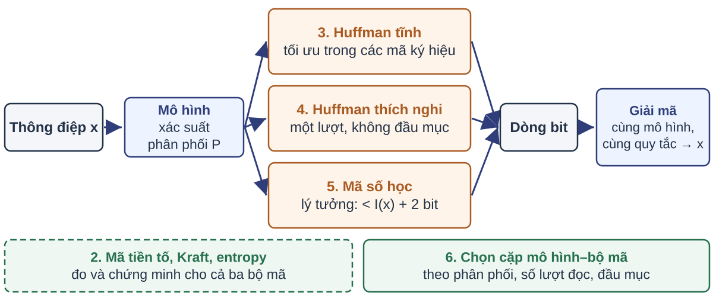
Bài toán lưu trữ đòi bên nhận dựng lại chính dữ liệu, còn phác thảo của Bài 09 chỉ trả lời truy vấn. Khoảng cách giữa số bit đang dùng và số bit cần dùng có thể lớn: nếu chữ e chiếm $1/16$ số ký tự của một văn bản, mỗi lần xuất hiện của nó mang $\log_216=4$ bit thông tin, nên chuỗi "eeeee" mang 20 bit, trong khi mã ASCII 8 bit dùng 40 bit (NG, tr.20). Sơ đồ tách hai tầng: mô hình cho xác suất, bộ mã biến xác suất thành bit, bộ giải mã lặp lại đúng các bước đó. Mạch 2 cho điều kiện giải mã và mức đích để đo cả ba bộ mã.
Vấn đề trung tâm, câu trả lời có điều kiện Mã tiền tố có tổng Kraft không quá 1; độ dài trung bình không nhỏ hơn entropy. Đọc hai lượt, gửi số đếm trước: Huffman cho mã tiền tố tối ưu, dưới entropy cộng 1. Một lượt, cùng thủ tục ở hai phía: cây luôn là cây Huffman của trọng số hiện thời. Số học chính xác: dưới $I(x)+2$ bit; thanh ghi $R$ bit đúng khi mọi $f_s\ge1$, $N\le2^{R-2}$. Dòng thứ nhất là giới hạn chung: mọi mã ký hiệu giải mã được đều trả ít nhất entropy bit mỗi ký hiệu. Dòng thứ hai đổi tính tối ưu lấy hai lượt đọc và một đầu mục. Dòng thứ ba bỏ hai chi phí đó, đổi lại khởi đầu chưa có số đếm và cần đồng bộ hai phía. Dòng thứ tư vượt giới hạn một bit mỗi ký hiệu của mọi mã ký hiệu; điều kiện $N\le2^{R-2}$ bảo đảm mỗi ký hiệu vẫn nhận một khoảng con nguyên khác rỗng trên thanh ghi.
Ví dụ: thông điệp A–E với mã độ dài cố định Thông điệp $n=39$ ký hiệu trên $\{\mathrm A,\mathrm B,\mathrm C,\mathrm D,\mathrm E\}$, số đếm 15, 7, 6, 6, 5.
Tính số bit khi mọi từ mã dài bằng nhau.
ASCII 8 bit mỗi ký hiệu: $39\cdot8=312$ bit.
Mã độ dài cố định (fixed-length code) $\lceil\log_25\rceil=3$ bit: $39\cdot3=117$ bit.
Diễn giải: A chiếm $15/39\approx38\%$ thông điệp mà vẫn tốn 3 bit như E.
Ví dụ 10.1, số đếm theo NG, tr.32–33. Số bit $\lceil\log_2k\rceil$ của một đại lượng nhận $k$ giá trị lấy từ Bài 08, Mục 1.4. Kiểm tra lại: $15+7+6+6+5=39$, và $2^2<5\le2^3$. Gán cho A một từ mã ngắn hơn và cho E một từ mã dài hơn có thể giảm tổng số bit; khi các từ mã dài khác nhau, bộ giải mã không còn cắt dòng bit thành các khối bằng nhau, nên cần nêu chính xác yêu cầu đối với một mã.
Mã ký hiệu và giải mã duy nhất Định nghĩa. Bảng chữ cái (alphabet) $\Sigma$ là tập hữu hạn $k\ge2$ ký hiệu (symbol) có thứ tự cố định.
Mã ký hiệu (symbol code) $c:\Sigma\to\{0,1\}^*$ gán cho mỗi $s$ một từ mã (codeword) khác rỗng $c(s)$, độ dài $\ell_s$.
Mở rộng của $c$ là
$$c^*(x_1\cdots x_n)=c(x_1)\cdots c(x_n).$$
Mã $c$ là mã giải mã duy nhất (uniquely decodable code) khi $c^*$ là đơn ánh.
Định nghĩa 10.1. Định nghĩa tách hai tầng: mã $c$ chỉ gán từ mã cho từng ký hiệu, còn tính giải mã duy nhất là yêu cầu trên $c^*$, tức trên cả dòng bit nối liền. Hai thông điệp khác nhau phải cho hai dòng bit khác nhau. Mã 3 bit của thông điệp A–E là trường hợp riêng với $\ell_s=3$ cho mọi $s$; nó giải mã duy nhất vì bộ giải mã cắt dòng bit thành từng khối 3 bit. Thông điệp $x=x_1\cdots x_n$ là chuỗi hữu hạn với $x_t\in\Sigma$, và $\Sigma^*$ là tập mọi thông điệp. Yêu cầu từ mã khác rỗng loại trường hợp một ký hiệu không để lại dấu vết trên dòng bit.
Không mã nào rút ngắn mọi thông điệp Mệnh đề. Nếu $\varphi:\{0,1\}^n\to\{0,1\}^*$ là đơn ánh thì có $u\in\{0,1\}^n$ với $\lvert\varphi(u)\rvert\ge n$ (Mệnh đề 10.2).
Nhắc lại: không có đơn ánh từ $A$ vào $B$ khi $\lvert A\rvert>\lvert B\rvert$ (nguyên lý Dirichlet, pigeonhole principle).
Chứng minh. Có $\sum_{j=0}^{n-1}2^j=2^n-1$ chuỗi ngắn hơn $n$ bit, ít hơn $2^n$ chuỗi $n$ bit.
Ví dụ. $n=3$: 8 chuỗi 3 bit; 7 chuỗi ngắn hơn gồm 1 chuỗi rỗng, 2 chuỗi 1 bit, 4 chuỗi 2 bit.
Mệnh đề 10.2 chỉ cần $\varphi$ là đơn ánh, tức yêu cầu khôi phục chính xác; không cần giả thiết gì về cách tính $\varphi$. Chứng minh: giả sử mọi $u$ có ảnh ngắn hơn $n$ bit; khi đó $\varphi$ là đơn ánh từ tập $2^n$ phần tử vào tập $2^n-1$ phần tử, trái với nguyên lý Dirichlet. Mệnh đề áp dụng cho mọi bộ nén không mất thông tin, kể cả ba bộ mã của bài: bộ mã rút ngắn một số thông điệp thì phải giữ nguyên hoặc kéo dài ít nhất một thông điệp khác. Do đó nén chỉ có lợi trên các thông điệp mà mô hình gán xác suất cao. Phản ví dụ CMU, trang chiếu 7. Nén mất thông tin (lossy compression) chỉ yêu cầu bản khôi phục gần bản gốc và không thuộc bài này (NG, tr.18–19).
Ví dụ: chữ u dưới hai mô hình Mô hình không nhìn ký tự trước gán cho u xác suất 1%.
Mô hình nhìn một ký tự trước, khi ký tự đó là q, gán 95%.
So số bit $-\log_2p$ của u theo hai mô hình:
$$-\log_20{,}01\approx6{,}64\ \text{bit},\qquad -\log_20{,}95\approx0{,}074\ \text{bit}.$$
Trực quan. Nén gồm hai việc: đoán ký hiệu tiếp theo, rồi biến lời đoán thành bit.
Ví dụ 10.2, số liệu NG, tr.21. Cùng một ký tự, ở cùng một vị trí, cần khoảng $6{,}64$ bit hay chỉ khoảng $0{,}074$ bit tùy mô hình. Kiểm tra lại: $2^{-6{,}64}\approx0{,}0100$ và $2^{-0{,}074}\approx0{,}950$. Theo mệnh đề vừa chứng minh, bộ nén chỉ rút ngắn được thông điệp mà nó coi là dễ xảy ra, và mức dễ xảy ra do mô hình quyết định. Hai việc đoán và biến lời đoán thành bit tách rời nhau (NG, tr.19, Hình 2.1; CMU, trang chiếu 8); định nghĩa kế tiếp đặt tên cho chúng.
Mô hình xác suất và bộ mã Định nghĩa. Mô hình xác suất (statistical model) cho phân phối $P_t$ trước mỗi vị trí $t$.
Mô hình là tĩnh (static) khi $P_t=P$, là thích nghi (adaptive) khi $P_t$ cập nhật sau mỗi ký hiệu.
Mô hình có bậc (order) $j$ khi $P_t$ chỉ phụ thuộc $j$ ký hiệu trước.
Bộ mã (coder) là thủ tục tất định biến $P_1,P_2,\ldots$ và $x$ thành bit.
Định nghĩa 10.3. Mô hình tĩnh còn gọi là thích nghi tiến (forward adaptation): bảng xác suất hoặc bảng số đếm được dựng trước và truyền cho bên nhận, hoặc được hai phía thống nhất từ trước. Mô hình thích nghi còn gọi là thích nghi lùi (backward adaptation); hai tên theo EE398A-1, trang chiếu 23. Hai mô hình của chữ u có bậc 0 và bậc 1. Bộ giải mã tương ứng nhận cùng dãy phân phối và dòng bit, rồi trả lại $x$. Một bộ nén là một cặp mô hình–bộ mã. Một nhầm lẫn thường gặp là nói "mã Huffman nén kém": độ dài đầu ra phụ thuộc trước hết vào xác suất mà mô hình đưa cho bộ mã, nên câu đó thường nói về mô hình (NG, tr.19–20).
Bốn thành phần của một giao thức nén Nhận xét. Hai phía phải dùng chung:
bảng chữ cái, cách biểu diễn ký hiệu mới; mô hình tĩnh đã truyền, hoặc quy tắc cập nhật mô hình thích nghi; quy tắc mã, gồm phá hòa (tie-breaking rule) và làm tròn; cách dừng: ký hiệu kết thúc dòng EOS (end of stream) hoặc $n$. Nhận xét 10.4 (NG, tr.52 và tr.99 cho hai cách dừng). Thiếu một thành phần, bộ giải mã có thể đọc sai dù nhận đúng từng bit. Ví dụ với thành phần 3, theo Bài tập 10.1 của ghi chú: lời văn NG cho mã A = 0, B = 100, C = 101, D = 110, E = 111, còn chương trình HUFF.C phá hòa khác và cho E = 100, B = 111. Bên nén mã BE thành 100111, bên nhận dùng mã thứ hai đọc ra EB, sai cả hai ký hiệu. Hai trục mô hình và bộ mã ghép thành bốn ô: tĩnh với Huffman, thích nghi với Huffman, tĩnh với số học được xét trong bài; thích nghi với số học là đọc thêm (NG, Chương 6).
2. Mã tiền tố, bất đẳng thức Kraft và entropyMuốn chọn độ dài từ mã ngắn mà vẫn giải mã được, phải có điều kiện tiền tố, tổng Kraft và mức đích entropy.
Mã tiền tố · Cây mã · Tổng Kraft · Entropy · Cận hai phía
Mạch mở đầu cho đặc tả giải mã duy nhất và thông điệp A–E với 117 bit ở mã 3 bit, nhưng không cho cách kiểm một mã cụ thể hay độ dài từ mã cho ký hiệu xác suất $p$. Mạch này đặt điều kiện tiền tố kiểm được trên từng cặp từ mã, tiêu chuẩn Kraft cho bộ độ dài, và mức đích entropy kẹp mã tiền tố tối ưu trong $[H;\,H+1)$. Giới hạn giao cho mạch sau: hai cận không chỉ ra cách tìm mã tối ưu.
Dòng bit nhiều cách đọc Muốn gán cho A từ mã ngắn hơn E, phải có điều kiện trên từ mã kiểm được từng cặp.
Ví dụ. Mã $\mathrm a$ = 1, $\mathrm b$ = 01, $\mathrm c$ = 101, $\mathrm d$ = 011: dòng 1011 có ba cách đọc.
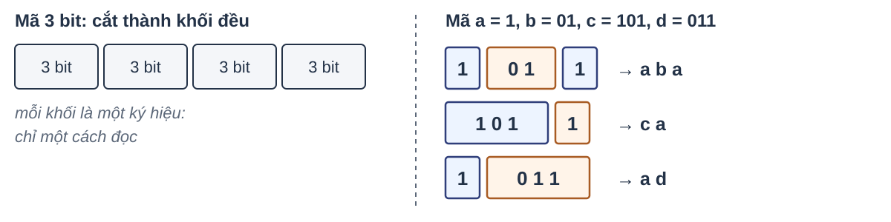
Phản ví dụ theo CMU, trang chiếu 22; điều kiện cần tìm là điều kiện tiền tố (Định nghĩa 10.5). Dòng 1011 là $c^*(\mathrm{aba})$, cũng là $c^*(\mathrm{ca})$ và $c^*(\mathrm{ad})$, nên $c^*$ không đơn ánh. Nguyên nhân: từ mã 1 của a là phần đầu của từ mã 101 của c, nên sau khi đọc bit 1, bộ giải mã không biết đã hết một từ mã hay mới bắt đầu một từ mã dài hơn. Với mã độ dài cố định, bộ giải mã cắt thành khối đều và không gặp vấn đề này, nhưng cũng không rút ngắn được ký hiệu hay gặp. Định nghĩa giải mã duy nhất nói về mọi thông điệp, nên không kiểm trực tiếp được; điều kiện cần tìm phải chỉ xét từng cặp từ mã.
Mã tiền tố Định nghĩa. $u$ là tiền tố (prefix) của $u'$ khi $u'=uu''$ với chuỗi bit $u''$ có thể rỗng.
Mã $c$ là mã tiền tố (prefix code) khi không $c(s)$ nào là tiền tố của $c(s')$, $s\ne s'$.
Mã tiền tố còn gọi là mã tức thời (instantaneous code).
Định nghĩa 10.5. Điều kiện chỉ xét từng cặp từ mã, nên kiểm được bằng $\binom k2$ phép so sánh; vì phần nối thêm được phép rỗng, các từ mã của mã tiền tố đôi một khác nhau. Mã độ dài cố định là mã tiền tố. Mã $\mathrm a$ = 1, $\mathrm b$ = 01, … của dòng 1011 không là mã tiền tố vì 1 là tiền tố của 101. Tên mã tức thời đến từ cách giải mã: mỗi ký hiệu được nhận ra ngay khi đọc bit cuối của từ mã.
Cây mã và giải mã Định nghĩa. Cây mã (code tree) có nút là tiền tố của từ mã; gốc rỗng, con của $u$ là $u0$, $u1$.
Ví dụ. Mã A = 0, B = 100, C = 101, D = 110, E = 111; giải mã 0101100111.
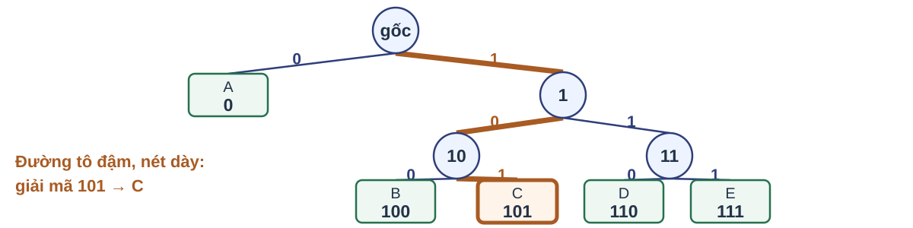
Cắt ngay khi phần đã đọc là một lá: 0 → A; 101 → C; 100 → B; 111 → E.
Thông điệp ACBE; kiểm tra: $1+3+3+3=10$ bit.
Định nghĩa 10.5 (cây mã) và Ví dụ 10.3. Độ sâu của nút $u$ trên cây mã là $\lvert u\rvert$. Mã A–E của ví dụ là mã của NG, tr.36. Ở bước thứ hai, 1 và 10 là nút trong nên chưa là từ mã; tới 101 mới tới lá C. Một cách trực quan, cây mã là trò chơi hỏi–đáp: mỗi bit trả lời một câu hỏi có–không, và từ mã là đường từ gốc tới câu trả lời cuối cùng (EE398A-1, trang chiếu 3–4). Từ mã $c(s)$ là tiền tố của $c(s')$ đúng khi nút $c(s)$ là tổ tiên của nút $c(s')$; mã tiền tố là mã mà mọi từ mã là lá. Thủ tục đi một bước xuống cây cho mỗi bit, nên giải mã $c^*(x)$ tốn $\sum_t\ell_{x_t}$ bước; đây cũng là cách giải mã của Huffman tĩnh (NG, tr.55).
Mã tiền tố, cây mã và giải mã tức thời Mệnh đề. (a) $c$ là mã tiền tố $\iff$ $c$ đơn ánh, tập lá của cây mã là tập từ mã.
(b) Mã tiền tố thì giải mã duy nhất.
(c) Mã tiền tố giải mã tức thời: đi cây theo từng bit, phát ký hiệu khi tới lá.
Chứng minh. (b) $c(x_1)$, $c(y_1)$ là tiền tố của nhau nên $x_1=y_1$; quy nạp.
Mệnh đề 10.6. Phần (a): một nút $u$ của cây mã là nút trong khi và chỉ khi $u$ là tiền tố thực sự của một từ mã, và mọi lá là từ mã; các lá đúng là các từ mã khi không từ mã nào là nút trong. Phần (b) quy nạp theo $\lvert x\rvert+\lvert y\rvert$: nếu $c^*(x)=c^*(y)$ và một thông điệp rỗng thì thông điệp kia cũng rỗng vì từ mã khác rỗng; nếu không, điều kiện tiền tố cho $x_1=y_1$, bỏ từ mã chung ở đầu và áp giả thiết quy nạp. Phần (c): sau khi phát đúng $x_1,\ldots,x_{t-1}$ và đứng ở gốc, các bit tiếp theo đi qua các tiền tố thực sự của $c(x_t)$ là nút trong và tới lá đúng ở bit cuối, nên mỗi ký hiệu được nhận ra ngay. Thủ tục cần biết khi dừng, bằng EOS hoặc $n$. Có mã giải mã duy nhất không là mã tiền tố: mã 1, 10, 100, … có mỗi bit 1 đánh dấu đầu một từ mã, nhưng sau khi đọc 1 bộ giải mã phải đọc thêm một bit mới biết đã hết từ mã chưa (Bài tập 10.10 của ghi chú, theo CMU-A1, bài 2).
Khoảng mã và tổng Kraft Nhu cầu: độ dài $(1,1,2)$ không có mã tiền tố: 0, 1 là tiền tố của mọi chuỗi 2 bit.
Định nghĩa. Với $u=b_1\cdots b_\ell$, $z(u)=\sum_ib_i2^{-i}$, khoảng mã (code interval) và tổng Kraft (Kraft sum) là
$$J(u)=\bigl[z(u);\,z(u)+2^{-\ell}\bigr),\qquad K=\sum_{s\in\Sigma}2^{-\ell_s}.$$
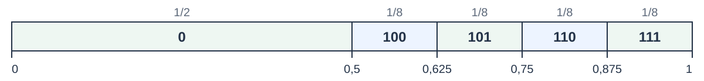
Bổ đề. Các chuỗi có điều kiện tiền tố khi và chỉ khi khoảng mã đôi một rời nhau.
Định nghĩa 10.7 và Bổ đề 10.8(c). Một cách trực quan, mỗi từ mã độ dài $\ell$ chiếm phần $[0;1)$ rộng $2^{-\ell}$, và các từ mã của mã tiền tố không được chiếm chồng lên nhau. Khoảng $J(u)$ gồm đúng các số trong $[0;1)$ có khai triển nhị phân bắt đầu bằng $u$, khi chọn khai triển không kết thúc bằng dãy 1 vô hạn (CMU, trang chiếu 45–46). Tổng Kraft của một mã bằng tổng độ rộng các khoảng mã của nó. Bổ đề: nếu $u$ là tiền tố của $u'$ thì $J(u')\subseteq J(u)$; nếu không chuỗi nào là tiền tố của chuỗi kia, hai khoảng là hai ô khác nhau của lưới $2^{-\ell}$ nên rời nhau. Khoảng phải nửa mở: với khoảng đóng, $J(\texttt{0})$ và $J(\texttt{1})$ chung điểm $1/2$. Năm khoảng mã của mã A–E trên hình phủ kín $[0;1)$, nên tổng độ rộng là $K=\tfrac12+4\cdot\tfrac18=1$. Bổ đề này cho Định lý 10.34(b): các chuỗi bit có khoảng mã nằm trong các khoảng chuỗi rời nhau tạo thành mã tiền tố.
Ví dụ: tổng Kraft và dựng mã từ bộ độ dài Tổng Kraft: $(1,1,2)$: $1{,}25$; $(1,3,3,3,3)$: $1$; $(2,2,2,3,3)$: $1$; $(2,3,3,3,3)$: $0{,}75$; chỉ $(1,1,2)$ có $K>1$.
Dựng mã cho $(2,3,3,3,3)$: đặt $z_i=\sum_{j<i}2^{-\ell_j}$, viết $z_i$ bằng $\ell_i$ bit.
$i$ $\ell_i$ $z_i$ từ mã khoảng mã 1 2 $0$ 00$[0;\,0{,}25)$ 2 3 $1/4$ 010$[0{,}25;\,0{,}375)$ 3 3 $3/8$ 011$[0{,}375;\,0{,}5)$ 4 3 $1/2$ 100$[0{,}5;\,0{,}625)$ 5 3 $5/8$ 101$[0{,}625;\,0{,}75)$
Năm khoảng liền nhau nên rời nhau: mã tiền tố; $[0{,}75;\,1)$ còn trống.
Ví dụ 10.4. Bộ $(1,1,2)$ là dữ liệu tính tay của ghi chú; $(1,3,3,3,3)$ là bộ độ dài của mã A–E đã giải mã bằng cây mã; $(2,2,2,3,3)$ là bộ độ dài của mã 00, 01, 10, 110, 111; $(2,3,3,3,3)$ là bộ độ dài Shannon của A–E. Bộ duy nhất có $K>1$ là $(1,1,2)$, đúng bộ không có mã tiền tố. Với $K=0{,}75<1$, bảng $z_i$ dựng được mã: điểm đầu $z_i$ là tổng độ rộng các khoảng đứng trước, nên các khoảng xếp liền nhau từ trái sang phải. Theo Bổ đề 10.8(c), năm từ mã 00, 010, 011, 100, 101 có điều kiện tiền tố. Phần trống $[0{,}75;1)$ đúng là khoảng mã của 11, nên đổi 101 thành 11 vẫn cho mã tiền tố, với độ dài $(2,3,3,3,2)$ và $K=7/8$. Thủ tục chỉ cần bộ độ dài và thứ tự ký hiệu, nên hai phía biết cùng bộ độ dài dựng được cùng một mã mà không trao đổi từ mã. Đây là Bước 2–3 của chứng minh chiều (b) của Định lý 10.9, chạy trên số cụ thể.
Bất đẳng thức Kraft Định lý (bất đẳng thức Kraft, Kraft inequality). Cho bộ số nguyên dương $(\ell_s)_{s\in\Sigma}$, $K=\sum_s2^{-\ell_s}$.
(a) Mã tiền tố với $\lvert c(s)\rvert=\ell_s$ thì $K\le1$.
(b) Nếu $K\le1$ thì có mã tiền tố với $\lvert c(s)\rvert=\ell_s$ cho mọi $s$.
(c) Với mã tiền tố, $K=1$ khi và chỉ khi cây mã là cây nhị phân đầy đủ.
Định lý 10.9. Phần (a) cần điều kiện tiền tố; phần (b) chỉ cần các độ dài nguyên dương. Tóm lại, một bộ độ dài nguyên dương là bộ độ dài của một mã tiền tố khi và chỉ khi $K\le1$. Phản ví dụ khi bỏ "mã tiền tố" ở (a): mã 0, 01, 10, 11 có $K=1{,}25$ và không giải mã duy nhất, vì 01011001 đọc được hai cách (EE398A-1, trang chiếu 12). Định lý nói về độ dài, không về một bộ từ mã: mã 1, 01, 101, 011 có $K=1$ mà không giải mã duy nhất; cây mã của nó không đầy đủ (nút 0 chỉ có một con), nên (c) cũng cần giả thiết mã tiền tố. Nhận xét 10.10: phần (a) còn đúng cho mọi mã giải mã duy nhất (bất đẳng thức McMillan; CMU, trang chiếu 28; EE398A-1, trang chiếu 13), nên khi tìm mã ngắn nhất chỉ cần xét mã tiền tố; chứng minh ngoài phạm vi học phần.
Chứng minh: bất đẳng thức Kraft, phần (a) và (b) (a) Từ mã là lá, nên các $J(c(s))$ đôi một rời nhau trong $[0;1)$ và $K\le1$.
(b) Sắp $\ell_1\le\cdots\le\ell_k$, đặt $z_i=\sum_{j<i}2^{-\ell_j}$; mỗi $2^{-\ell_j}$, $j<i$, là bội của $2^{-\ell_i}$ nên $2^{\ell_i}z_i$ nguyên.
$$z_i+2^{-\ell_i}=z_{i+1}\le z_{k+1}=K\le1\quad\Rightarrow\quad 0\le2^{\ell_i}z_i\le2^{\ell_i}-1.$$
Gán cho ký hiệu thứ $i$ chuỗi $\ell_i$ bit biểu diễn $2^{\ell_i}z_i$, khoảng mã $[z_i;\,z_{i+1})$.
Các khoảng liền nhau nên rời nhau; theo bổ đề khoảng mã, mã là mã tiền tố. $\square$
Chứng minh Định lý 10.9, Bước 1–3. Phần (a) dùng Mệnh đề 10.6(a) để các từ mã là lá và Bổ đề 10.8(c) để chuyển điều kiện tiền tố thành tính rời nhau; các khoảng đều nằm trong $[0;1)$ nên tổng độ rộng không vượt 1. Phần (b) là thủ tục của ví dụ $(2,3,3,3,3)$: điều kiện sắp tăng dần bảo đảm $z_i$ là bội của $2^{-\ell_i}$, nên viết được $z_i$ bằng đúng $\ell_i$ bit; điều kiện $K\le1$ bảo đảm $2^{\ell_i}z_i$ không vượt $2^{\ell_i}-1$, tức chuỗi $\ell_i$ bit đủ chỗ. Phần (c) quy nạp theo số lá: ở cây đầy đủ, lá sâu nhất có anh em là lá; nếu hai lá đó ở độ sâu $\ell$, bỏ chúng thì cha thành lá và $K$ không đổi vì $2^{-(\ell-1)}-2\cdot2^{-\ell}=0$. Nếu cây không đầy đủ, một nút trong ở độ sâu $\ell'$ thiếu một con; thêm con đó làm từ mã mới vẫn cho mã tiền tố, nên $K+2^{-(\ell'+1)}\le1$ và $K<1$.
Tự thông tin và entropy Nhu cầu: A–E tốn 87 bit với độ dài $(1,3,3,3,3)$, 89 bit với $(2,2,2,3,3)$; cần mức đích không phụ thuộc mã.
Chữ e xác suất $1/16$ mang $\log_216=4$ bit.
Định nghĩa. Với $P$ có mọi $p_s>0$: tự thông tin (self-information) của $s$, của $x$ và entropy (entropy) của $P$ là
$$I(s)=-\log_2p_s,\qquad I(x)=\sum_{t=1}^{n}I(x_t),\qquad H(P)=\sum_sp_s\log_2\frac1{p_s}.$$
Định nghĩa 10.11. Phép tính: $15\cdot1+(7+6+6+5)\cdot3=87$ và $15\cdot2+7\cdot2+6\cdot2+6\cdot3+5\cdot3=89$. Theo định lý Kraft cả hai bộ độ dài đều dùng được; để biết 87 bit tốt hay chưa, cần một mức đích không phụ thuộc mã cụ thể. Tự thông tin còn gọi là lượng thông tin (information content); $I(x)$ định nghĩa cho mô hình tĩnh, $I(x)=-\log_2\prod_tp_{x_t}$. Entropy là kỳ vọng của tự thông tin, tính bằng bit mỗi ký hiệu. Ký hiệu hiếm có tự thông tin lớn. Nhầm lẫn cần tránh: NG (tr.20) gọi $-\log_2p$ là "entropy của một ký hiệu"; ở đây chữ entropy chỉ dùng cho kỳ vọng $H(P)$, và entropy là của một mô hình: cùng một văn bản, hai mô hình cho hai entropy khác nhau.
Độ dài trung bình và entropy của A–E Định nghĩa. Độ dài trung bình (average length) là $\bar\ell(c)=\sum_sp_s\ell_s$; mã tiền tố tối ưu (optimal prefix code) có $\bar\ell(c)$ nhỏ nhất.
Chi phí của cây mã $T$ là $\operatorname{cost}(T)=\sum_sf_s\operatorname{depth}_T(s)$, bằng $N\bar\ell(c)$ khi $p_s=f_s/N$.
$s$ A B C D E $f_s$ 15 7 6 6 5 $I(s)$ (bit) 1,38 2,48 2,70 2,70 2,96 $f_sI(s)$ (bit) 20,68 17,35 16,20 16,20 14,82
Với $p_s=f_s/39$: $I(x)=NH(P)\approx85{,}25$ bit; $H(P)\approx2{,}186$ bit mỗi ký hiệu.
Ví dụ 10.5, bảng theo NG, tr.33. Kiểm tra lại: $20{,}68+17{,}35+16{,}20+16{,}20+14{,}82=85{,}25$; giá trị chính xác hơn là $85{,}247$ bit. Định nghĩa độ dài trung bình và mã tối ưu là phần cuối của Định nghĩa 10.11 (CMU, trang chiếu 26). Khi $T$ là cây mã của $c$ và $p_s=f_s/N$, $\operatorname{cost}(T)=\sum_sf_s\ell_s=N\bar\ell(c)$ là số bit của $c^*(x)$; tương tự $NH(P)=\sum_sf_sI(s)=I(x)$ là tổng tự thông tin của các ký hiệu trong thông điệp. Hai đẳng thức này chuyển các kết quả theo bit mỗi ký hiệu thành kết quả cho cả thông điệp. Một cách trực quan, ký hiệu xác suất $2^{-\ell}$ ứng với một lá ở độ sâu $\ell$, vì mỗi bit chia đôi khả năng còn lại (EE398A-1, trang chiếu 6). Phân phối càng lệch thì entropy càng nhỏ, và $0\le H(P)\le\log_2k$; với năm ký hiệu $\log_25\approx2{,}32$. Ba phân phối khác của CMU, trang chiếu 14, cho $H=2{,}25$, $2$ và khoảng $1{,}31$.
Cận dưới entropy Định lý. Giả thiết: $P$ có mọi $p_s>0$; $c$ là mã tiền tố trên $\Sigma$; $\bar\ell(c)$ đo theo chính $P$.
Kết luận: $\bar\ell(c)\ge H(P)$, dấu bằng khi và chỉ khi $p_s=2^{-\ell_s}$ với mọi $s$.
Ý nghĩa: với $p_s=f_s/N$, mọi mã tiền tố tốn ít nhất $I(x)$ bit, như $85{,}25$ bit cho A–E.
Định lý 10.12, phần cận dưới của định lý mã hóa không nhiễu của Shannon (Shannon's noiseless coding theorem). Giả thiết "$P$ của mô hình" quyết định cách đọc: với một bảng mã dựng từ dữ liệu khác, cận nói về phân phối của bảng chứ không về tệp đang nén. Cận nói về độ dài trung bình theo $P$, không về một thông điệp cụ thể. Bỏ giả thiết mã tiền tố thì kết luận sai: với $P=(\tfrac12,\tfrac14,\tfrac18,\tfrac18)$ và mã 0, 01, 10, 11, $\bar\ell=1{,}5<H(P)=1{,}75$, nhưng mã đó không giải mã duy nhất (EE398A-1, trang chiếu 12). Theo bất đẳng thức McMillan, kết luận vẫn đúng cho mọi mã giải mã duy nhất. Ký hiệu có $p_s=0$ có tự thông tin vô hạn và bị loại khỏi bảng chữ cái của mô hình tĩnh.
Chứng minh: cận dưới entropy Bước 1: vì $\ell_s=\log_22^{\ell_s}$, gộp hai tổng thành một tổng.
$$H(P)-\bar\ell(c)=\sum_sp_s\log_2\frac{2^{-\ell_s}}{p_s}.$$
Bước 2: đặt $\xi_s=2^{-\ell_s}/p_s>0$, dùng $\log_2\xi=\ln\xi/\ln2$ và $\ln\xi\le\xi-1$.
$$\sum_sp_s\log_2\xi_s\le\frac1{\ln2}\sum_s\bigl(2^{-\ell_s}-p_s\bigr)=\frac{K-1}{\ln2}.$$
Bước 3: theo bất đẳng thức Kraft (a), $K\le1$, nên $H(P)-\bar\ell(c)\le0$.
Dấu bằng: cần $\xi_s=1$ với mọi $s$, tức $p_s=2^{-\ell_s}$; khi đó $K=1$. $\square$
Chứng minh Định lý 10.12. Ý tưởng: viết hiệu thành tổng $\sum_sp_s\log_2\xi_s$, chặn từng logarit bằng $\ln\xi\le\xi-1$, rồi dùng tổng Kraft. Ở Bước 2, phép chặn từng số hạng cần $p_s>0$ để nhân hai vế không đổi chiều; đẳng thức dùng $p_s\xi_s=2^{-\ell_s}$ và $\sum_sp_s=1$. Bước 3 là chỗ duy nhất dùng điều kiện tiền tố, qua $K\le1$. Dấu bằng xảy ra khi cả Bước 2 và Bước 3 là đẳng thức: Bước 2 đòi $\ln\xi_s=\xi_s-1$, tức $\xi_s=1$, với mọi $s$ vì mọi trọng số $p_s$ dương; khi đó $K=\sum_sp_s=1$ nên Bước 3 cũng là đẳng thức. Ngược lại, nếu $p_s=2^{-\ell_s}$ thì $\bar\ell(c)=\sum_sp_s\log_2(1/p_s)=H(P)$.
Cận trên: độ dài Shannon Định lý. Với mọi $p_s>0$ và $k\ge2$, độ dài Shannon $\ell_s=\lceil-\log_2p_s\rceil$ là độ dài của một mã tiền tố $c$ có $\bar\ell(c)<H(P)+1$.
Chứng minh. $2^{-\ell_s}\le p_s$ nên $K\le1$, Kraft (b) cho mã; $\ell_s<-\log_2p_s+1$, nhân $p_s$ rồi cộng. $\square$
Ví dụ. A–E: độ dài Shannon $(2,3,3,3,3)$, $15\cdot2+24\cdot3=102$ bit.
Hai cận: $85{,}25\le102<124{,}25$ bit; mã 87 bit cho thấy mã Shannon không tối ưu.
Định lý 10.13. Giả thiết $k\ge2$ và mọi $p_s>0$ bảo đảm mỗi $p_s<1$, nên mọi độ dài Shannon là số nguyên dương; với $k=1$, $p_s=1$ cho $\ell_s=0$, không phải độ dài của một từ mã. Mã của định lý thường không tối ưu; định lý cho biết mã tiền tố tối ưu có $\bar\ell<H(P)+1$. Hai định lý kẹp mã tiền tố tối ưu trong $[H(P);\,H(P)+1)$ bit mỗi ký hiệu, hay $[I(x);\,I(x)+N)$ bit cho thông điệp khi $p_s=f_s/N$. Cận dưới đúng cho mọi mã tiền tố, còn cận trên được chứng minh bằng một mã cụ thể. Ví dụ 10.6: tự thông tin của A–E là 1,38; 2,48; 2,70; 2,70; 2,96 bit, làm tròn lên được $(2,3,3,3,3)$; mã dựng từ bộ này là 00, 010, 011, 100, 101 của bảng $z_i$; cận trên cho cả thông điệp là $I(x)+N\approx85{,}25+39=124{,}25$ bit, theo bit mỗi ký hiệu $2{,}186\le2{,}615<3{,}186$. Mã 87 bit nằm giữa $85{,}25$ và $102$; hai cận không cho cách tìm mã tối ưu cho một bảng số đếm.
Bài tập: trường hợp dấu bằng Câu hỏi: cho $P=(\tfrac12,\tfrac14,\tfrac18,\tfrac18)$ trên bốn ký hiệu.
Tính $H(P)$, các độ dài Shannon, một mã tiền tố có các độ dài đó và $\bar\ell$ của nó.
Kiểm điều kiện dấu bằng của cận dưới entropy; so với mã độ dài cố định 2 bit.
Bài tập 10.3 của ghi chú (EE398A-1, trang chiếu 17); kiểm tính entropy, độ dài Shannon và dựng mã từ độ dài. Gợi ý: mọi xác suất là lũy thừa của $\tfrac12$, nên $-\log_2p_s$ đã là số nguyên. Lời giải: $H(P)=\tfrac12\cdot1+\tfrac14\cdot2+2\cdot\tfrac18\cdot3=1{,}75$ bit. Độ dài Shannon $(1,2,3,3)$, tổng Kraft $\tfrac12+\tfrac14+\tfrac18+\tfrac18=1$; bảng $z_i$ cho mã 0, 10, 110, 111. Độ dài trung bình $\tfrac12\cdot1+\tfrac14\cdot2+\tfrac18\cdot3+\tfrac18\cdot3=1{,}75=H(P)$; điều kiện $p_s=2^{-\ell_s}$ đúng với cả bốn ký hiệu. Mã 2 bit thừa $0{,}25$ bit mỗi ký hiệu. Hướng dẫn chấm: $H$ đúng (2 điểm), độ dài và mã (4 điểm), $\bar\ell$ và kiểm dấu bằng (3 điểm), so sánh (1 điểm).
3. Mã Huffman tĩnhMuốn có mã tiền tố tối ưu cho một bảng số đếm, phải ghép hai nút nhẹ nhất từ lá lên gốc.
Shannon–Fano · Hàng đợi ưu tiên · Phép đổi chỗ · Tính tối ưu · Đầu mục
Mạch mã tiền tố cho cây mã, đẳng thức $\operatorname{cost}(T)=N\bar\ell(c)$ và hai cận entropy: mọi mã tiền tố cho A–E tốn ít nhất $I(x)\approx85{,}25$ bit, và có mã dưới $I(x)+N$. Mạch này đặt phương pháp chia từ trên xuống Shannon–Fano làm giới hạn có số, xây thuật toán Huffman, chứng minh nó tối ưu bằng phép đổi chỗ và quy nạp, rồi đếm chi phí và đầu mục. Giới hạn giao cho mạch sau: bộ nén tĩnh đọc hai lượt và gửi đầu mục, đầu mục tăng nhanh theo bậc của mô hình.
Số bit tối thiểu cho thông điệp A–E Nhắc lại: mã tiền tố tối ưu cho A–E nằm trong $[85{,}25;\,124{,}25)$ bit; mã 3 bit tốn 117, mã độ dài Shannon 102.
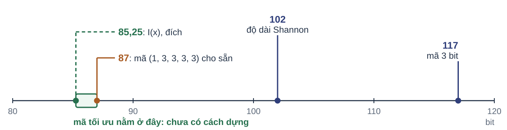
Nhu cầu: với bảng số đếm bất kỳ, một thuật toán cho mã tiền tố có $\operatorname{cost}(T)$ nhỏ nhất.
Các con số lấy từ Ví dụ 10.1, 10.5, 10.6 của ghi chú. Mã 87 bit với độ dài $(1,3,3,3,3)$ là mã A–E đã giải mã bằng cây mã (NG, tr.36): chưa có thủ tục dựng nó từ số đếm, và chưa biết nó có tối ưu không. Theo cận dưới entropy, không mã tiền tố nào dưới $85{,}25$ bit, nên mã tối ưu nằm trong đoạn từ $85{,}25$ tới 87 bit. Bài toán tổng quát: cho $\Sigma$ và số đếm $f_s\ge1$, tìm cây mã có $k$ lá với $\operatorname{cost}(T)=\sum_sf_s\operatorname{depth}_T(s)$ nhỏ nhất. Duyệt mọi cây không khả thi vì số cây tăng rất nhanh theo $k$; cần một quy tắc dựng cây.
Ví dụ: Shannon–Fano cho A–E Sắp giảm dần, chia hai nhóm có tổng gần nhau nhất, nhóm trên bit 0, lặp trên mỗi nhóm.
Lần 1: $\{\mathrm A,\mathrm B\}$ 22 và $\{\mathrm C,\mathrm D,\mathrm E\}$ 17; chia sau A cho 15 và 24, lệch hơn.
Lần 2–4: A với B; C với $\{\mathrm D,\mathrm E\}$; D với E.
Mã 00, 01, 10, 110, 111: $(15+7+6)\cdot2+(6+5)\cdot3=89$ bit.
Đưa A lên độ sâu 1 tiết kiệm 15 bit, đẩy B, C xuống 3 chỉ tốn 13 bit.
Ví dụ 10.7, NG, tr.32–33; mã Shannon–Fano (Shannon–Fano coding) dựng cây từ gốc xuống. Kiểm tra: tổng Kraft $3\cdot\tfrac14+2\cdot\tfrac18=1$, và $85{,}25\le89$. Phương pháp tạo mã tiền tố có độ dài gần $I(s)$ nhưng không bảo đảm tối ưu: mã 87 bit ngắn hơn 2 bit, theo phép tính ở dòng cuối (NG, tr.37). Lần chia đầu chỉ cân bằng hai tổng và không nhìn tới cách các nhóm sẽ được chia tiếp; quyết định bit đầu của mọi từ mã được đưa ra khi chưa biết các nhóm con.
Cách dựng từ lá lên gốc Huffman tương tự Shannon–Fano ở chỗ cũng dựng cây mã, nhưng khác ở chiều dựng: từ lá lên gốc.
Trực quan. Có cây tối ưu mà hai ký hiệu ít gặp nhất là anh em sâu nhất.
Ghép hai ký hiệu đó thành một ký hiệu, số đếm bằng tổng: bài toán với $k-1$ ký hiệu.
Ví dụ 10.7 và Thuật toán 10.14. Shannon–Fano quyết định bit đầu của mọi từ mã trước và dừng ở 89 bit cho A–E. Quan sát cấu trúc là Bổ đề 10.16, chứng minh bằng phép đổi chỗ; nó là lý do để dựng từ dưới lên. Mỗi lần ghép giảm số ký hiệu đi 1, nên sau $k-1$ lần ghép còn một nút, là gốc. Hàng đợi ưu tiên cài bằng đống nhị phân, lấy ra nút nhẹ nhất và chèn nút mới trong $O(\log k)$; cách dùng hàng đợi trong Huffman theo trang chiếu Stanford CS106B, tr.130–132. Ký hiệu $\mathcal Q$ khác $Q$ của mạch mã số học.
Ví dụ: Huffman cho A–E, bốn lượt ghép Mỗi lượt lấy ra hai nút nhẹ nhất; hòa C6, D6 thì chọn ký hiệu đứng sau, D.
Lượt Hàng đợi Lấy ra Nút mới Sau lượt 1 A15, B7, C6, D6, E5 E5, D6 DE11 A15, B7, C6, DE11 2 A15, B7, C6, DE11 C6, B7 BC13 A15, DE11, BC13 3 A15, DE11, BC13 DE11, BC13 24 A15, 24 4 A15, 24 A15, 24 gốc 39 gốc 39
Ví dụ 10.8, NG, tr.35–36; NG chọn D khi C, D hòa ở lượt 1, tức chọn ký hiệu đứng sau trong thứ tự. Cột "Hàng đợi" và "Sau lượt" là trạng thái hàng đợi trước và sau mỗi lần lặp. NG nói rằng cách phá hòa đổi từ mã cụ thể nhưng không đổi độ dài tổng (tr.35). Sau lượt 1 đã biết bit cuối của D và E: hai lá nhẹ nhất bị ghép trước nên nằm sâu nhất. A, ký hiệu nặng nhất, chỉ được nối vào gốc ở lượt cuối. Câu hỏi để tự kiểm: nếu phá hòa chọn C ở lượt 1, các lượt sau thay đổi thế nào và tổng số bit có đổi không. Lời giải: lượt 1 ghép E5 với C6, lượt 2 ghép D6 với B7; cây cùng hình dạng, từ mã của C và D đổi, tổng vẫn 87 bit.
Ví dụ: Huffman cho A–E, cây và bảng mã 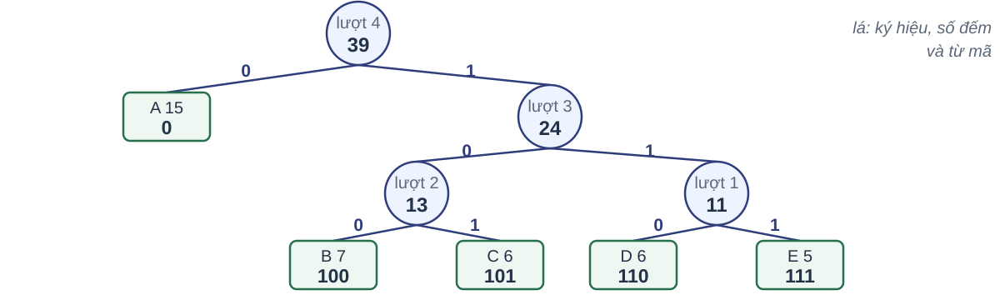
Bit: gốc cho A 0, nút 24 bit 1; nút 24 cho BC13 0, DE11 1; B, D bit 0; C, E bit 1.
A = 0, B = 100, C = 101, D = 110, E = 111: $15\cdot1+24\cdot3=87$ bit; $K=1$.
Ví dụ 10.8, phần gán bit và số bit. Cách gán bit theo hình của NG (tr.35–36): gốc cho A bit 0 và nút 24 bit 1; nút 24 cho BC13 bit 0 và DE11 bit 1; BC13 cho B bit 0, C bit 1; DE11 cho D bit 0, E bit 1. Mỗi nút trong ghi số lượt ghép đã tạo ra nó, như kiểu vẽ của CMU, trang chiếu 34. Tổng Kraft bằng 1 đúng với cây đầy đủ theo bất đẳng thức Kraft (c). Đây chính là mã 87 bit đã gặp ở mạch trước, nay có thủ tục dựng từ số đếm.
Thuật toán: Huffman tĩnh Đầu vào: $\Sigma$ với $k\ge2$ ký hiệu, số đếm $f_s\ge1$; quy tắc phá hòa và gán bit chung cho hai phía.
Đầu ra: cây nhị phân đầy đủ $T$ có $k$ lá; bảng mã $c$ đọc trên đường từ gốc tới lá.
HUFFMAN(Σ, f)
𝒬 ← hàng đợi ưu tiên chứa lá s với khóa f[s], mọi s ∈ Σ
for r ← 1 to k − 1:
v1 ← EXTRACT-MIN(𝒬); v2 ← EXTRACT-MIN(𝒬)
v ← nút mới, hai con v1, v2, wt(v) = wt(v1) + wt(v2)
gán bit 0, 1 cho hai con theo quy tắc chung
INSERT(𝒬, v)
return EXTRACT-MIN(𝒬) ▷ gốc của T
Phép quyết định là chọn hai nút nhẹ nhất; quy tắc phá hòa và gán bit thuộc giao thức.
Thuật toán 10.14. Trên ví dụ A–E, hàng đợi ban đầu là bảng số đếm, bốn lượt là bốn lần lặp của vòng for, nút trả về là gốc 39. Dừng: mỗi lượt giảm số nút trong $\mathcal Q$ đi 1, nên sau $k-1$ lượt còn đúng một nút. Mã hóa phát $c(x_t)$ cho $t=1,\ldots,n$; giải mã đi cây theo từng bit, dừng sau $n$ ký hiệu hoặc khi gặp EOS. Trường hợp biên: với $k=1$, lá duy nhất có từ mã rỗng; NG luôn thêm EOS với số đếm 1 (tr.52, tr.61–62) nên bảng chữ cái có ít nhất hai ký hiệu. Ký hiệu có $f_s=0$ không được đưa vào $\mathcal Q$ (NG, tr.54). Khi có hòa, mọi lựa chọn đều hợp lệ, nhưng hai phía phải chọn như nhau.
Phép đổi chỗ hai lá Trên cây A–E, đổi A (15, độ sâu 1) với E (5, độ sâu 3): $15\cdot3+7\cdot3+6\cdot3+6\cdot3+5\cdot1=107$ bit.
Đổi hai lá $s$, $s'$ có độ sâu $d_s$, $d_{s'}$ làm chi phí thay đổi
$$\Delta=f_sd_{s'}+f_{s'}d_s-f_sd_s-f_{s'}d_{s'}=(f_s-f_{s'})(d_{s'}-d_s).$$
Với A và E: $\Delta=(15-5)(3-1)=20$, khớp $107-87$.
Diễn giải: $\Delta\le0$ khi ký hiệu nặng hơn được đưa lên nông hơn.
Ví dụ 10.9; đây là phép đổi chỗ của CMU, trang chiếu 31. Thuật toán Huffman là tham lam: mỗi lượt chọn hai nút nhẹ nhất và không xét lại, nên tính tối ưu cần lập luận riêng; phép đổi chỗ là công cụ chính. Kiểm tra: với B và C cùng độ sâu 3, $\Delta=(7-6)(3-3)=0$. Một cách trực quan, đưa ký hiệu nhẹ xuống sâu không làm tăng chi phí, và co hai lá anh em thành một lá chỉ bớt một khoản cố định; hai ý đó trở thành hai bổ đề dùng trong phép quy nạp.
Hai ký hiệu ít gặp nhất là anh em sâu nhất Cây tối ưu là cây mã có $\operatorname{cost}(T)$ nhỏ nhất.
Bổ đề. Giả thiết: $k\ge2$, mọi $f_s\ge1$; $s_1$ có số đếm nhỏ nhất, $s_2$ nhỏ nhất trong phần còn lại.
Kết luận: có cây tối ưu mà $s_1$, $s_2$ là hai lá anh em ở độ sâu lớn nhất.
Lưu ý: chỉ khẳng định tồn tại; đúng với mọi cách chọn $s_1$, $s_2$ khi có hòa.
Vì $\operatorname{cost}(T)=N\bar\ell(c)$ và lá của cây mã đúng là các từ mã, cây tối ưu cho đúng mã tiền tố tối ưu với $p_s=f_s/N$. Không phải mọi cây tối ưu đều đặt $s_1$, $s_2$ làm anh em. Điều kiện "mọi cách chọn khi có hòa" cho phép áp dụng bổ đề cho đúng hai ký hiệu mà thuật toán lấy ra ở lượt đầu. Chứng minh dùng một bổ đề phụ (Bổ đề 10.15): khi mọi $f_s\ge1$, cây tối ưu là cây đầy đủ, vì nếu nút trong $v$ chỉ có một con $v'$, nối $v'$ vào chỗ của $v$ làm mọi lá dưới $v'$ nông đi 1 và chi phí giảm ít nhất 1.
Chứng minh: hai ký hiệu ít gặp nhất là anh em sâu nhất Bước 1: chi phí nguyên dương nên có cây tối ưu $T$; nó là cây đầy đủ.
Bước 2: lá $\sigma$ ở độ sâu lớn nhất $d$ có anh em $\sigma'$ là lá.
Bước 3: đặt tên sao cho $s_2\ne\sigma$; đổi $s_1$ với $\sigma$:
$$\Delta_1=(f_{s_1}-f_\sigma)(d-d_{s_1})\le0.$$
Bước 4: ký hiệu $s'\ne s_1$ ở $\sigma'$ có $f_{s'}\ge f_{s_2}$; đổi: $\Delta_2=(f_{s_2}-f_{s'})(d-d_{s_2})\le0$.
Cây mới không đắt hơn nên tối ưu, $s_1$, $s_2$ anh em ở độ sâu $d$. $\square$
Chứng minh Bổ đề 10.16, khung theo CMU, trang chiếu 31 và 36. Bước 1: có ít nhất một cây (cây của mã độ dài cố định), và tập chi phí là tập số nguyên dương nên có phần tử nhỏ nhất. Bước 2: $\sigma$ không là gốc vì $k\ge2$; $\sigma'$ là lá vì nếu là nút trong, nó có hậu duệ là lá sâu hơn $d$. Bước 3 đặt tên theo ba trường hợp: nếu $s_1$ thuộc cặp, gọi nó là $\sigma$; nếu chỉ $s_2$ thuộc cặp, gọi nó là $\sigma'$; nếu không, giữ tên. $\Delta_1\le0$ vì $f_{s_1}\le f_\sigma$ theo cách chọn $s_1$ và $d\ge d_{s_1}$ theo cách chọn $d$; phép đổi không di chuyển $s_2$ vì $s_2\ne\sigma$. Bước 4: ký hiệu ở $\sigma'$ khác $s_1$ (đã nằm ở $\sigma$), nên $f_{s'}\ge f_{s_2}$ theo cách chọn $s_2$.
Huffman cho mã tiền tố tối ưu Định lý. Với $k\ge2$, mọi $f_s\ge1$ và quy tắc phá hòa bất kỳ, $\operatorname{cost}(T_{\mathrm H})\le\operatorname{cost}(T)$ với mọi cây mã $T$ của mã tiền tố.
Giả thiết: mỗi lượt ghép hai nút nhẹ nhất; mã ký hiệu nguyên bit; số đếm là của mô hình.
Định lý 10.18. Mỗi giả thiết đều cần. Bỏ "ghép hai nút nhẹ nhất": cây Shannon–Fano cũng là cây đầy đủ dựng theo quy tắc khác và tốn 89 bit so với 87. Bỏ "mã ký hiệu nguyên bit": khi được mã cả chuỗi, có thể dùng ít hơn 1 bit mỗi ký hiệu; với hai ký hiệu xác suất $0{,}9$ và $0{,}1$, mọi mã ký hiệu dùng ít nhất 1 bit mỗi ký hiệu trong khi $H\approx0{,}47$ bit. Đọc thêm: Huffman trên khối $j$ ký hiệu đạt $H\le\bar\ell/j<H+1/j$ bit mỗi ký hiệu, với bảng chữ cái $k^j$ phần tử (EE398A-1, trang chiếu 21; NG, tr.96 gọi là gom bit thành gói); cách mã đó nằm ngoài so sánh của định lý. Bỏ "số đếm của mô hình": nếu số đếm truyền cho bộ mã khác số đếm thật, cây tối ưu cho số đếm truyền đi, không cho thông điệp. Theo bất đẳng thức McMillan, định lý so sánh được với mọi mã giải mã duy nhất.
Chứng minh: Huffman cho mã tiền tố tối ưu Bổ đề. Co hai lá anh em $s_1$, $s_2$ thành lá $s_{12}$, $f_{s_{12}}=f_{s_1}+f_{s_2}$, được cây $T'$ trên bảng chữ cái $\Sigma'$: $\operatorname{cost}(T)=\operatorname{cost}(T')+f_{s_1}+f_{s_2}$.
Quy nạp theo $k$. Cơ sở $k=2$: chi phí $N$, mọi cây tốn ít nhất $N$.
$k\ge3$: từ lượt 2, thuật toán chạy trên $\Sigma'$; theo giả thiết quy nạp, cây $T'_{\mathrm H}$ tối ưu.
Cây tối ưu $T^*$ có $s_1$, $s_2$ anh em, co thành $T^{*\prime}$:
$$\operatorname{cost}(T^*)=\operatorname{cost}(T^{*\prime})+f_{s_1}+f_{s_2}\ge\operatorname{cost}(T'_{\mathrm H})+f_{s_1}+f_{s_2}=\operatorname{cost}(T_{\mathrm H}).\ \square$$
Chứng minh Định lý 10.18. Dòng đầu là Bổ đề 10.17: hai lá ở độ sâu $d+1$ dưới cha $v$ ở độ sâu $d$, nên co chúng bớt đúng $(f_{s_1}+f_{s_2})(d+1)-(f_{s_1}+f_{s_2})d$; đẳng thức đúng cho mọi cây, tối ưu hay không, và chiều ngược (gắn hai con vào $s_{12}$) có cùng phép tính. Ở bước $k\ge3$, $s_1$, $s_2$ là hai nút lấy ra ở lượt đầu, nên $s_1$ có số đếm nhỏ nhất và $s_2$ nhỏ nhất trong phần còn lại; từ lượt thứ hai, thuật toán chạy đúng như khi nhận $\Sigma'$, với quy tắc phá hòa cảm sinh. $\Sigma'$ có $k-1\ge2$ ký hiệu với số đếm dương. Cây $T^*$ có từ bổ đề hai ký hiệu ít gặp nhất; đây là chỗ duy nhất dùng phép chọn hai nút nhẹ nhất. Bất đẳng thức dùng giả thiết quy nạp. Vì $T^*$ tối ưu, $T_{\mathrm H}$ cũng tối ưu, với mọi quy tắc phá hòa.
Cận entropy của mã Huffman Hệ quả. Với $p_s=f_s/N$ và mã Huffman $c_{\mathrm H}$: $H(P)\le\bar\ell(c_{\mathrm H})<H(P)+1$, tức $I(x)\le\operatorname{cost}(T_{\mathrm H})<I(x)+N$.
Chứng minh. Cận dưới entropy cho vế trái; mã Shannon có $\bar\ell<H(P)+1$ và Huffman không dài hơn.
Ví dụ. A–E: $\bar\ell(c_{\mathrm H})=87/39\approx2{,}231$, $2{,}186\le2{,}231<3{,}186$; thừa $87-85{,}25\approx1{,}75$ bit.
Hệ quả 10.19 và Ví dụ 10.10. Giả thiết như định lý tối ưu. Mã Huffman thừa khoảng $0{,}045$ bit mỗi ký hiệu so với entropy trên A–E, trong khi hệ quả cho phép thừa tới gần 39 bit. Kiểm tra: $39\cdot2{,}186\approx85{,}25$ và $39\cdot2{,}231\approx87$. Với phân phối lệch, $H(P)<\log_2k$, và Huffman đạt mức đó trong vòng 1 bit mỗi ký hiệu, còn mã độ dài cố định luôn dùng $\lceil\log_2k\rceil$ bit. Phạm vi: khi $H(P)$ nhỏ so với 1, phần thừa tới gần 1 bit mỗi ký hiệu có thể lớn hơn chính $H(P)$; khi xác suất lớn nhất tiến gần 1, $H(P)$ tiến về 0 nhưng mọi mã ký hiệu vẫn dùng ít nhất 1 bit.
Chi phí: Huffman tĩnh Mô hình: phép so sánh và phép ghi; $\mathcal Q$ là đống nhị phân; trường hợp xấu nhất.
Bước Số lần Chi phí mỗi lần Đóng góp đếm (lượt đọc thứ nhất) $n$ $O(1)$ $O(n)$ đưa $k$ lá vào $\mathcal Q$ $k$ $O(\log k)$ $O(k\log k)$ ghép: hai lấy ra, một chèn $k-1$ $O(\log k)$ $O(k\log k)$ dựng bảng mã $2k-1$ nút $O(1)$ cộng bit ghi ra $O(\sum_s\ell_s)$ mã hóa (lượt đọc thứ hai) $n$ $O(\ell_{x_t})$ $O(\operatorname{cost}(T))$ giải mã $\operatorname{cost}(T)$ bit $O(1)$ $O(\operatorname{cost}(T))$
Tổng $O(n+k\log k+\operatorname{cost}(T))$; bộ nhớ $k$ số đếm và $2k-1$ nút.
Nhận xét 10.20. Mỗi hàng truy được về một dòng của giả mã hoặc của bộ mã hóa, giải mã: đưa lá vào $\mathcal Q$ là dòng khởi tạo, ghép là thân vòng for, dựng bảng mã là một lần duyệt cây. Trong tổng, $\operatorname{cost}(T)\le n\,\ell_{\max}$, và $\operatorname{cost}(T)<I(x)+n$ khi cây dựng từ số đếm thật. Chương trình HUFF.C của NG không dùng đống mà quét toàn bộ mảng nút để tìm hai nút nhẹ nhất ở mỗi lượt (tr.54, 62), tức $O(k)$ mỗi lượt và $O(k^2)$ cho cả cây; với $k=257$, số nút không quá $513$. Các số trong bảng là phép đếm theo giả mã, không phải số đo.
Đầu mục của Huffman tĩnh HUFF.C dùng 257 ký hiệu: 256 giá trị byte và EOS.
Đầu mục (header): số đếm co về một byte, 256 byte, thay cho mảng nút 4K byte của cây.
Hai lượt đọc: đếm tới cuối tệp, rồi quay lại đầu để mã hóa.
Bậc 1: 257 bảng; ước tính bảng số đếm tăng từ 256 lên $65\,536$ byte.
Nhận xét 10.20, phần đầu mục (header, còn gọi là thông tin phụ, side information), NG, tr.52–54. Với bậc 1, 257 bảng là số của NG, tr.67; mức $65\,536$ byte là ước lượng ở một trang khác, NG, tr.24. Bên nhận dựng lại đúng cây vì chạy cùng thuật toán, cùng quy tắc phá hòa trên cùng số đếm. Các số đếm bằng 0 được bỏ bằng cách gửi từng dải ký hiệu liên tiếp: ký hiệu đầu, ký hiệu cuối, rồi số đếm trong dải, kết thúc bằng số 0; NG (tr.67) ước khoảng 250 byte mỗi tệp cho mô hình bậc 0. Số đếm co về một byte giữ mọi phép tính khi dựng cây trong số nguyên 16 bit; NG (tr.52) viết thêm rằng từ mã không dài quá 16 bit, nhưng phép co không bảo đảm điều đó: cận Fibonacci chỉ loại từ mã 17 bit khi gốc nhỏ hơn $4\,181$, còn gốc có thể tới $256\cdot255+1=65\,281$. Hai lượt đọc đòi đầu vào đọc lại được, nên cách này không dùng được cho dòng chỉ đọc một lần. Vì số đếm bị co, định lý tối ưu bảo đảm tối ưu cho số đếm đã co, không cho số đếm thật.
Bài tập: Huffman cho năm ký hiệu lệch Câu hỏi: một thông điệp có số đếm E 20, A 20, X 3, Y 3, Z 2.
Chạy Huffman tĩnh (phá hòa: X trước Y, E trước A); cho độ dài và tổng số bit.
Tính $I(x)$ với $p_s=f_s/48$ và so với số bit Huffman.
Bài tập 10.4 của ghi chú, số liệu NG, Chương 2, tr.23; kiểm chạy thuật toán và cận entropy. Gợi ý: lượt 1 ghép Z với một trong hai ký hiệu trọng số 3. Lời giải với phá hòa chọn X trước Y: Z2 và X3 thành 5; Y3 và 5 thành 8; 8 và E20 thành 28; A20 và 28 thành gốc 48. Độ dài A 1, E 2, Y 3, X 4, Z 4; tổng $20+40+9+12+8=89$ bit. NG cho E độ dài 1, A độ dài 2, X 3, Y 4, cây của cách phá hòa khác với cùng 89 bit. $I(\mathrm E)=I(\mathrm A)=\log_2(48/20)\approx1{,}263$, $I(\mathrm X)=I(\mathrm Y)=4$, $I(\mathrm Z)=\log_224\approx4{,}585$ bit, nên $I(x)\approx83{,}69$ bit; NG in $83{,}56$ do làm tròn trước khi nhân. Huffman thừa khoảng $5{,}3$ bit, tức khoảng 6%. Hướng dẫn chấm: các lượt ghép (4 điểm), độ dài và 89 bit (3 điểm), $I(x)$ và so sánh (3 điểm).
4. Mã Huffman thích nghiMuốn nén một lượt mà không gửi bảng số đếm, phải cập nhật cây Huffman cục bộ sau mỗi ký hiệu.
Tính chất anh em · Nút cuối khối · ESCAPE và EOS · Đồng bộ hai phía · Dựng lại cây
Mạch Huffman tĩnh cho thuật toán, định lý tối ưu và thứ tự lấy ra khỏi hàng đợi; đổi lại bộ nén tĩnh đọc hai lượt và gửi đầu mục 256 byte ở bậc 0, tới $65\,536$ byte ở bậc 1. Mạch này để hai phía bắt đầu từ cùng một cây và cùng cập nhật cây sau mỗi ký hiệu, theo AHUFF.C (NG, Chương 4). Giới hạn giao cho mạch sau: mọi mã Huffman gán cho mỗi ký hiệu một từ mã nguyên bit, nên mỗi ký hiệu tốn ít nhất 1 bit.
Bộ nén một lượt không đầu mục Nhắc lại: mã tĩnh đọc hai lượt, gửi 256 byte số đếm ở bậc 0, $65\,536$ byte ở bậc 1.
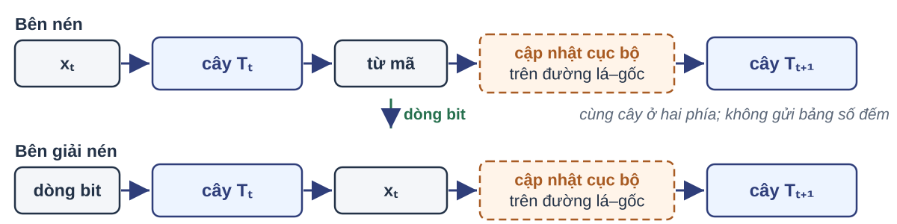
Chạy lại Huffman sau mỗi ký hiệu tốn $O(k\log k)$ mỗi ký hiệu.
Nhu cầu: phép cập nhật trên đường lá–gốc giữ cây là cây Huffman của trọng số hiện thời.
Định nghĩa 10.3 (mô hình thích nghi) và Nhận xét 10.20 cho đầu mục. Bộ nén thích nghi là một thuật toán dòng một lượt theo Định nghĩa 08.1, với trạng thái là cây mã. NG (tr.68) gọi bộ nén chạy lại Huffman sau mỗi ký hiệu là bộ nén chậm nhất thế giới. Hai phía bắt đầu từ cùng cây và cập nhật sau khi xử lý ký hiệu, nên ký hiệu thứ $t$ được mã và giải trên cùng cây $T_t$ sau $t-1$ ký hiệu (NG, tr.25, tr.80). Không cần bảng số đếm và không cần lượt đọc trước, nhưng phép cập nhật phải đủ rẻ và phải tất định để hai phía luôn giống nhau. Phép cập nhật cục bộ cần một đặc trưng của cây Huffman kiểm được trên chính cây, không cần chạy lại thuật toán; đặc trưng đó là tính chất anh em.
Ví dụ: danh sách nút của một cây Huffman Trọng số A 1, B 2, C 2, D 2, E 10: Huffman ghép A, B; C, D; 3 với 4; 7 với E.
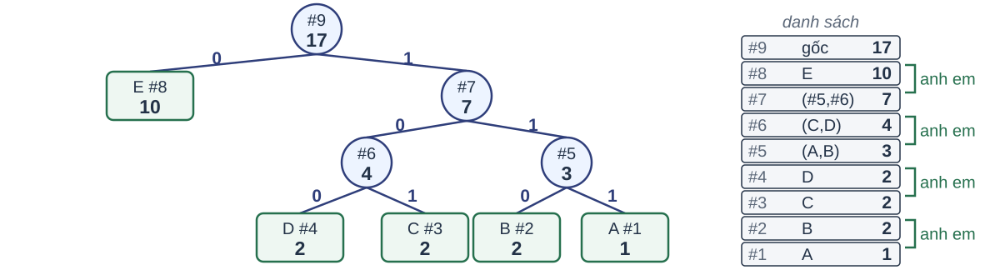
Xếp nút theo trọng số không giảm, vị trí $\#1$–$\#9$: các cặp $(\#1,\#2)$, …, $(\#7,\#8)$ là anh em.
Danh sách đúng là thứ tự lấy ra khỏi $\mathcal Q$.
Quy ước: vị trí lẻ nhận bit 1, vị trí chẵn bit 0: E = 0, A = 111.
Ví dụ 10.11, trọng số theo NG, tr.68. Danh sách theo trọng số không giảm là A1, B2, C2, D2, (A, B)3, (C, D)4, $\#7$: 7, E10, gốc 17; mỗi nút trong bằng tổng hai con: $1+2=3$, $2+2=4$, $3+4=7$, $7+10=17$. Lượt 1 lấy A, B; lượt 2 lấy C, D; lượt 3 lấy hai nút 3 và 4; lượt 4 lấy 7 và E; gốc đứng cuối. Quy ước bit theo mã nguồn AHUFF.C (NG, tr.81, tr.92, viết theo chỉ số mảng đánh từ gốc); lời văn NG (tr.81) mô tả ngược lại, và mọi dòng bit của mạch này theo mã nguồn. Với cây này, quy ước cho E = 0, D = 100, C = 101, B = 110, A = 111.
Tính chất anh em Định nghĩa. Cây có trọng số (weighted tree) là cây nhị phân đầy đủ, $k'\ge2$ lá;
lá có trọng số nguyên không âm, nút trong nặng bằng tổng hai con.
Cây có tính chất anh em (sibling property) khi xếp được nút thành $v_1,\ldots,v_{2k'-1}$ sao cho
$$\operatorname{wt}(v_1)\le\cdots\le\operatorname{wt}(v_{2k'-1}),\qquad v_{2j-1},\,v_{2j}\ \text{là anh em},\ j=1,\ldots,k'-1.$$
Định nghĩa 10.21. Khi đó $v_{2k'-1}$ là gốc, vì mọi nút khác đã có anh em trong một cặp. NG (tr.68) phát biểu tính chất anh em bằng lời: các nút liệt kê được theo thứ tự trọng số và mỗi nút đứng cạnh anh em của nó. NG dùng chữ "Huffman tree" cho cả mọi cây có trọng số lẫn cây do thuật toán sinh ra; ở đây cây Huffman chỉ dùng cho nghĩa thứ hai. Phản ví dụ ở dòng cuối là NG, Hình 4.8, gốc trọng số 8: trong mọi danh sách không giảm, nút 2 đứng sau A, B và trước C, D. Cây đó cũng không là cây Huffman: thuật toán ghép nút 2 với một lá 3 ở lượt thứ hai. Trọng số 0 được phép trong định nghĩa vì lá mới thêm có trọng số 0.
Tính chất anh em đặc trưng cây Huffman Cây Huffman: kết quả của Huffman tĩnh, với một quy tắc phá hòa.
Định lý. Cây có trọng số là cây Huffman khi và chỉ khi có tính chất anh em.
Giả thiết: chiều ngược cần mọi lá nặng ít nhất 1.
Chứng minh. Thuận: thứ tự lấy ra khỏi $\mathcal Q$. Ngược: $v_1$, $v_2$ là hai lá nhẹ nhất, anh em; quy nạp.
Định lý 10.22. Chiều thuận: mỗi nút khác gốc vào hàng đợi đúng một lần và được lấy ra đúng một lần, cặp lấy ra trong một lượt là anh em; trong một lượt nút lấy trước nhẹ hơn, giữa hai lượt nút mới có trọng số $\operatorname{wt}(\mu_r)+\operatorname{wt}(\nu_r)\ge\operatorname{wt}(\nu_r)$ vì trọng số không âm, nên danh sách không giảm. Chiều ngược cần trọng số dương: mỗi nút trong nặng hơn hẳn từng con, nên con đứng trước cha; $v_1$, $v_2$ không thể là nút trong; lượt đầu với phá hòa chọn $v_1$ rồi $v_2$ tạo đúng cha của chúng, và cây còn lại với danh sách $v_3,\ldots$ thỏa giả thiết quy nạp. Kết hợp với định lý tối ưu, cây có tính chất anh em và mọi lá dương cho mã tiền tố tối ưu với trọng số lá làm số đếm. AHUFF.C giữ các nút trong một mảng sắp giảm dần từ gốc, hai con ở hai chỉ số liền nhau, tức danh sách viết ngược (NG, tr.78–81).
Ví dụ: tăng A từ 1 lên 3 Lần thứ nhất (A lên 2): không đổi.
Lần thứ hai: tăng tại chỗ thì A3 ở $\#1$ đứng trước B, C, D nặng 2.
Đổi A với D, nút cuối khối trọng số 2 (vị trí lớn nhất có trọng số 2), rồi tăng.
Vị trí $\#1$ $\#2$ $\#3$ $\#4$ $\#5$ $\#6$ $\#7$ $\#8$ $\#9$ Nút D B C A (D, B) (C, A) $(\#5,\#6)$ E gốc Trọng số 2 2 2 3 4 5 9 10 19
Ví dụ 10.12, NG, tr.68–71; lần tăng thứ nhất ứng với NG, Hình 4.2. Lần thứ hai: NG (tr.70) đổi A với nút cuối cùng trong danh sách có cùng trọng số cũ 2, rồi mới tăng. Bước 1: A sang $\#4$ làm con của $\#6$, D sang $\#1$ làm con của $\#5$; hai cây con cùng trọng số 2 nên trọng số của $\#5$ và $\#6$ chưa đổi. Bước 2: tăng A tại $\#4$ thành 3; trạng thái này là Hình 4.3 của NG, trong đó $\#6$ vẫn ghi 4 dù hai con là C2 và A3. Bước 3: các nút trọng số 4 là $\#5$, $\#6$; nút cuối là chính $\#6$, nên không đổi. Bước 4: $\#7$ trọng số 8 là nút cuối khối 8. A và D vẫn có từ mã 3 bit (NG, tr.71).
Ví dụ: tăng A từ 1 lên 3, cây sau lần tăng thứ hai 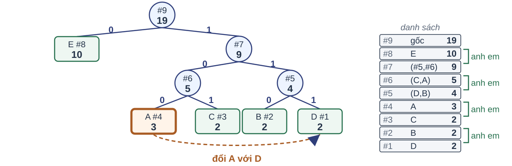
Danh sách không giảm, bốn cặp vẫn là anh em, mỗi nút trong bằng tổng hai con.
Trực quan. Tới cuối khối $q$ rồi mới tăng: nút trước nặng không quá $q$, nút sau ít nhất $q+1$.
Ví dụ 10.12, phần kiểm tra, và đoạn sau ví dụ. Khối trọng số $q$ là đoạn liên tiếp các vị trí có trọng số $q$ trong danh sách; nút cuối khối là nút ở vị trí lớn nhất trong đoạn đó. Hai nút đổi chỗ có cùng trọng số $q$ nên không cha nào bị sai tổng; nút đang tăng, sau khi đứng ở cuối khối, tăng lên $q+1$ mà không vượt nút đứng sau. Kiểm tổng: $2+2=4$ cho $\#5$, $2+3=5$ cho $\#6$, $4+5=9$ cho $\#7$, $9+10=19$ cho gốc. Chỉ phép đổi làm thay đổi hình dạng cây; phép tăng chỉ đổi số. Nút cuối khối có thể là một lá, như D ở đây, hoặc một nút trong.
Thuật toán: cập nhật cây bằng tăng và đổi Đầu vào: cây có tính chất anh em, mỗi nút khác gốc đứng trước cha; lá của ký hiệu $s$.
Đầu ra: cùng cây với $\operatorname{wt}$ của lá $s$ tăng 1, vẫn có tính chất anh em.
UPDATE(T, s)
if wt(gốc) = Wmax: REBUILD(T) ▷ chống tràn: co trọng số, dựng lại cây
v ← lá(s)
while v ≠ gốc:
v̂ ← nút ở vị trí lớn nhất có wt(v̂) = wt(v)
if v̂ ≠ v: SWAP(v, v̂) ▷ v sang vị trí của v̂
wt(v) ← wt(v) + 1
v ← cha(v)
wt(gốc) ← wt(gốc) + 1
Trường hợp biên: nút cuối khối $\hat v$ có thể là chính $v$, một lá hoặc một nút trong.
Thuật toán 10.23. Giả thiết: mọi lá có trọng số ít nhất 1, trừ có thể lá của $s$ vừa thêm với trọng số 0. SWAP đổi chỗ hai cây con gốc $v$ và $\hat v$: hai nút đổi vị trí và mỗi nút nhận cha của vị trí mới. Dừng: mỗi nút đứng trước cha, nên vị trí của $v$ tăng ngặt sau mỗi lượt; cây có $2k'-1$ vị trí nên sau nhiều nhất $2k'-2$ lượt $v$ là gốc. Gốc không bao giờ bị đổi. REBUILD là phép co trọng số và dựng lại cây (Thuật toán 10.29), gọi khi trọng số gốc đạt ngưỡng $W_{\max}$. AHUFF.C tăng trước rồi lùi về phía gốc tìm vị trí mới trên mảng đánh số từ gốc (NG, tr.83–84); vị trí tìm được là nút cuối khối của trọng số cũ, nên hai cách viết cho cùng phép đổi. Còn để ngỏ hai điều: nút cuối khối có thể là tổ tiên của $v$ không, vì khi đó cây con gốc $\hat v$ chứa $v$ và phép đổi vô nghĩa; và phép đổi có giữ tính chất anh em không.
Phép tăng–đổi giữ tính chất anh em Định lý. Giả thiết: trước UPDATE, cây có tính chất anh em, mỗi nút đứng trước cha;
mọi lá nặng ít nhất 1, trừ có thể lá mới của $s$.
Kết luận: sau UPDATE cây vẫn có tính chất anh em, chỉ lá $s$ tăng 1.
Ý nghĩa: sau mỗi lần cập nhật, cây là cây Huffman của trọng số hiện thời.
Định lý 10.25. Điều kiện áp dụng: mọi phép đổi chọn nút cuối khối của trọng số cũ, và hai nút đổi chỗ mang theo cây con của chúng. Dòng "Ý nghĩa:" dùng định lý đặc trưng cây Huffman và định lý tối ưu. Trọng số hiện thời là số đếm đã đọc sau các lần co, cùng hai lá ESCAPE, EOS trọng số 1. Bỏ "đổi với nút cuối khối": ở lần tăng thứ hai của ví dụ tăng A, danh sách thành A3, B2, C2, D2, … và không còn không giảm. Bỏ "mọi lá dương": cha của $v$ có thể là nút cuối khối, tức một tổ tiên của $v$; Bổ đề 10.24 loại trừ điều này khi mọi lá khác $v$ nặng dương.
Tính đúng: phép tăng–đổi, bất biến và khởi tạo Bất biến: (I1) trọng số không giảm theo vị trí; (I2) $\#(2j-1)$ và $\#2j$ là anh em;(I3) chỉ nút sắp xử lý $v$ có thể thiếu 1 so với tổng hai con; (I4) con đứng trước cha. Khởi tạo: $v$ là lá của $s$; (I1)–(I4) đúng theo giả thiết của định lý.
Chứng minh Định lý 10.25 dùng bất biến vòng lặp cho vòng while của UPDATE. (I3) nói rằng chỉ nút sắp xử lý có thể sai tổng, và sai đúng 1: nút đó đã có một con được tăng mà chính nó chưa được tăng; với $v$ là lá ở lượt đầu, vế "nếu là nút trong" không áp dụng. Bất biến (I3) giải thích Hình 4.3 của NG: nút $\#6$ ghi 4 trong khi hai con có tổng 5, vì $\#6$ là nút sắp được xử lý. Khởi tạo: giả thiết của định lý cho (I1), (I2), (I4), và (I3) đúng vì chưa trọng số nào thay đổi. (I1) và (I2) cùng nhau là tính chất anh em; (I4) là giả thiết "mỗi nút đứng trước cha" mà bổ đề nút cuối khối và điều kiện dừng cần.
Tính đúng: phép tăng–đổi, duy trì và kết thúc Hợp lệ cha của $v$ nặng $\ge q+1$ nên $\hat v$ không là tổ tiên; hậu duệ đứng trước $v$ nên $\hat v$ không là hậu duệ Đổi: (I1)–(I3) $v$, $\hat v$ cùng trọng số $q$; mỗi vị trí giữ cha Đổi: (I4) con của $\hat v$ dương, tổng $q$: đứng trước $v$ cũ Tăng nút sau khối nặng $\ge q+1$; cha của $v$ thiếu 1
Kết thúc: $v$ là gốc; tăng gốc, (I1)–(I3) cho tính chất anh em. $\square$
Định lý 10.25, bước duy trì, $q=\operatorname{wt}(v)$. Hàng "Hợp lệ" là Bổ đề 10.24: anh em $\sigma$ của $v$ có cây con không chứa $v$, mọi lá của nó nặng ít nhất 1, nên $\operatorname{wt}(\sigma)\ge1$; cha của $v$ nặng $q+\operatorname{wt}(\sigma)\ge q+1$, và tổ tiên xa hơn nặng không kém; hậu duệ thực sự đứng trước $v$, còn $\hat v$ không đứng trước $v$. Giả thiết trọng số dương đúng ở AHUFF.C: ESCAPE, EOS luôn nặng 1, lá mới chỉ nặng 0 ngay sau khi thêm. Với (I4) có ba nhóm nút: $v$ và $\hat v$ đổi vị trí, cha mới của mỗi nút đứng sau vị trí mới theo (I4) cũ; các con của $v$ đứng trước vị trí cũ nên vẫn đứng trước vị trí mới; các con của $\hat v$ có tổng $q$ theo (I3) và mỗi con nặng dương (lá trọng số 0, nếu có, là chính $v$), nên mỗi con nhẹ hơn $q$ và đứng trước cả khối $q$. Ở bước tăng, nút sau khối $q$ nặng ít nhất $q+1$ vì trọng số nguyên; sau đó chỉ cha của $v$ thiếu 1 và trở thành nút sắp xử lý. Kết thúc: khi $v$ là gốc, (I3) nói gốc thiếu đúng 1; bước cuối của UPDATE tăng gốc. Lá $s$ giờ nặng ít nhất 1, nên theo chiều ngược của định lý đặc trưng, cây là cây Huffman của trọng số hiện thời. Dừng: vị trí của $v$ tăng ngặt mỗi lượt theo (I4).
Chi phí: cập nhật cây Mô hình: so sánh và ghi trên mảng nút của AHUFF.C; $h$ là số lượt; xấu nhất.
Bước Số lần Chi phí mỗi lần Đóng góp tăng trọng số $h+1$ $O(1)$ $O(h)$ quét lùi tìm nút cuối khối $h$ $O(2k'-1)$ $O(hk')$ đổi hai phần tử, sửa con trỏ cha $\le h$ $O(1)$ $O(h)$
Tổng $O(hk')$ mỗi ký hiệu; $h\le2k'-2$ là số nút trên đường đi thực tế.
Bảng chi phí của Thuật toán 10.23. Quét lùi theo NG, tr.83; đổi phần tử mảng và sửa con trỏ cha theo NG, tr.84. Số lượt $h$ là số nút trên đường đi thực tế, có thể khác độ sâu ban đầu của lá vì đường đi tiếp từ cha mới. NG (tr.69) nêu rằng số phép tăng trung bình tương ứng với số bit trung bình của một ký hiệu. So với chạy lại Huffman, $O(k\log k)$ mỗi ký hiệu, phép cập nhật chỉ đi trên một đường lá–gốc; phần đắt là phép quét tìm nút cuối khối. Một bảng phụ ánh xạ mỗi ký hiệu tới chỉ số lá, nên tìm lá của $s$ tốn $O(1)$.
Ký hiệu mới, ESCAPE và EOS Nhu cầu: cây khởi tạo biết trước; cây 256 lá tốn 8 bit mỗi ký hiệu lúc đầu.
AHUFF.C khởi tạo hai lá trọng số 1: ký hiệu thoát (escape symbol) ESCAPE ở $\#1$, EOS ở $\#2$.
Ký hiệu mới: phát từ mã ESCAPE rồi 8 bit thô.
Nút ở $\#1$ thành nút trong, hai con: nút cũ và lá mới trọng số 0.
Thuật toán 10.26; cây khởi tạo theo NG, Hình 4.5, tr.74, gốc trọng số 2. Cây đủ 256 lá là cây cân bằng (NG, tr.73); với thông điệp ngắn, các lá trọng số 1 của ký hiệu không xuất hiện còn làm lệch thống kê. EOS (ký hiệu kết thúc dòng) cần một lá riêng vì 8 bit thô chỉ biểu diễn được 256 giá trị byte (NG, tr.90). Phép thêm lá theo NG, tr.82–83: nút nhẹ nhất ở $\#1$ trở thành nút trong. Vì lá mới đứng đầu danh sách với trọng số 0, danh sách vẫn có tính chất anh em trước khi tăng. Lá mới là trường hợp "trừ có thể lá của $s$" trong giả thiết của định lý tăng–đổi. Mỗi ký hiệu mới tốn từ mã của ESCAPE cộng 8 bit thô, nên lần đầu gặp một byte tốn ít nhất 9 bit.
Ví dụ: thêm ký hiệu E vào cây A, B, C, D Cây A1, B2, C2, D3, gốc 8 (hình lược hai lá ESCAPE, EOS); E chưa có lá.
Phát từ mã ESCAPE rồi 01000101; A ở $\#1$ thành nút trong, hai con A1, E0.
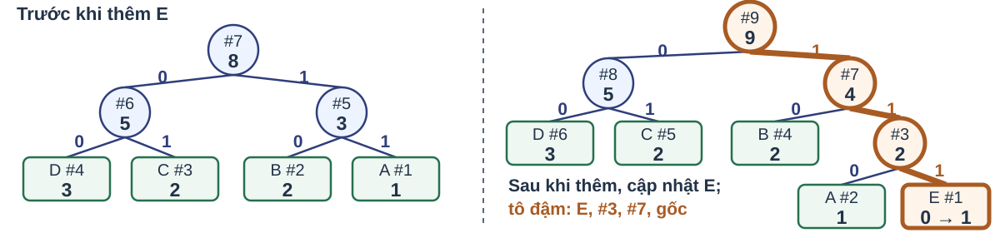
E ở $\#1$ duy nhất trọng số 0 → 1; $\#3$ cuối khối 1 → 2; $\#7$ cuối khối 3 → 4; gốc → 9.
Danh sách $1,1,2,2,2,3,4,5,9$; không có phép đổi; E dài 3 bit như A.
Ví dụ 10.14, cây của NG, Hình 4.10, tr.82, bỏ qua hai lá ESCAPE và EOS cho gọn. Cây ở đây khác cây của ví dụ tăng A (A1, B2, C2, D2, E10). Mã ASCII của E là $69=01000101_2$. Hai nút mới (lá E và bản sao của A) đứng đầu danh sách, nên mọi vị trí cũ dịch thêm 2; danh sách sau khi thêm lá là E0, A1, (E, A)1, B2, C2, D3, ($\#3$, B)3, (C, D)5, gốc 8, vẫn có tính chất anh em vì lá mới nặng 0. Cập nhật: ở mỗi lượt, nút đang xử lý đã là nút cuối khối của trọng số cũ: khối trọng số 1 gồm A ở $\#2$ và nút $\#3$, nút cuối là $\#3$; khối trọng số 3 gồm D ở $\#6$ và nút $\#7$, nút cuối là $\#7$. Kiểm tổng: $1+1=2$, $2+2=4$, $2+3=5$, $4+5=9$; danh sách không giảm. Theo quy ước bit của AHUFF.C, E = 111. Lá mới được thêm dưới vị trí của nút nhẹ nhất, nên trong các lá cũ chỉ lá nhẹ nhất, A, dài thêm 1 bit.
Thuật toán: mã hóa và giải mã Huffman thích nghi Đầu vào: thông điệp byte $x_1\cdots x_n$ (nén); dòng bit của bộ nén (giải nén).
Đầu ra: dòng bit (nén); $x_1\cdots x_n$ (giải nén).
NÉN(x₁ … xₙ)
T ← cây khởi tạo
for t ← 1 to n:
if xₜ có lá: phát c(xₜ)
else: phát c(ESCAPE), 8 bit xₜ;
thêm lá xₜ trọng số 0
UPDATE(T, xₜ)
phát c(EOS)
GIẢI-NÉN(dòng bit)
T ← cây khởi tạo
lặp: đi theo bit từ gốc tới lá
if lá là EOS: dừng
if lá là ESCAPE: s ← 8 bit tiếp;
thêm lá s trọng số 0
else: s ← ký hiệu của lá
phát s; UPDATE(T, s)
Giả thiết: cùng cây khởi tạo, quy ước bit, phép thêm lá, UPDATE; kênh không lỗi.
Kết luận: trước mỗi ký hiệu hai phía có cùng cây; bộ giải nén trả đúng $x$ (Mệnh đề 10.27).
Thuật toán 10.26. Cây khởi tạo: gốc trọng số 2, ESCAPE ở $\#1$ và EOS ở $\#2$, trọng số 1; theo quy ước bit, ESCAPE = 1 và EOS = 0. Thao tác quyết định ở cả hai phía là cập nhật sau khi xử lý ký hiệu, nên ký hiệu thứ $t$ được mã và giải trên cùng cây. Dừng: bộ giải nén dừng khi gặp EOS; EOS không được cập nhật ở cả hai phía. Trường hợp biên: thông điệp rỗng thành một bit 0; ký hiệu đầu tiên luôn đi qua ESCAPE. Chi phí mỗi ký hiệu: một lần đi cây $O(\ell)$ với $\ell$ là độ dài từ mã, một lần UPDATE, và 8 bit thô nếu ký hiệu mới. EE398A-1 (trang chiếu 23) nêu rằng thích nghi lùi buộc bộ giải mã cũng phải tính mô hình. Mệnh đề 10.27, chứng minh quy nạp theo $t$: hai phía có cùng cây khởi tạo; nếu cùng cây $T_t$ thì mã của nó là mã tiền tố, nên bộ giải nén tới đúng lá của $x_t$ (hoặc ESCAPE rồi đúng 8 bit); phép thêm lá và UPDATE tất định, kể cả kiểm $W_{\max}$ và dựng lại, nên hai phía có cùng $T_{t+1}$. Một bit lỗi làm bộ giải nén đi nhầm lá, và từ đó hai cây có thể lệch mãi; NG (tr.68) nêu rằng hai phía phải dùng đúng cùng thủ tục.
Chống tràn và cây Fibonacci Trọng số chỉ tăng: gốc tràn bộ đếm 16 bit, hoặc từ mã dài tràn biến tích bit.
Ví dụ. Lá 1, 1, 1, 2, 3, 5, phá hòa ưu tiên nút vừa tạo: cây lệch, từ mã dài nhất 5 bit.
Với $\mathrm{fib}(0)=\mathrm{fib}(1)=1$, gốc $\mathrm{fib}(i)$ cho từ mã tới $i-1$ bit.
Nếu biến tích bit là số nguyên 16 bit, gốc $4\,181=\mathrm{fib}(18)$ đã có thể tràn; AHUFF.C dùng unsigned long.
Ví dụ 10.15 (NG, Hình 4.6, tr.75) và Nhận xét 10.28. Hai giới hạn theo NG, tr.74: bộ nén thu các bit khi đi từ lá lên gốc theo thứ tự ngược rồi mới phát, nên cần một biến nguyên đủ dài. Ví dụ dùng quy tắc phá hòa ưu tiên nút vừa tạo: A1 và B1 thành 2; 2 và C1 thành 3; 3 và lá 2 thành 5; 5 và lá 3 thành 8; 8 và lá 5 thành gốc 13. A, B ở độ sâu 5; các nút trong là $\mathrm{fib}(2),\ldots,\mathrm{fib}(6)$. Kiểm tra: $1+1+1+2+3+5=13$. NG gọi cây này là trường hợp xấu nhất; cận tổng quát (cận Fibonacci) nằm ngoài phạm vi học phần. AHUFF.C chọn ngưỡng $W_{\max}$ là MAX_WEIGHT $=$ 0x8000 $=32\,768$ (NG, tr.88) và tích từ mã trong biến unsigned long (tr.91); khi gốc đạt $W_{\max}$, trọng số lá được co rồi cây được dựng lại. Nếu biến tích bit là số nguyên 16 bit, giới hạn thứ hai có thể đến sớm hơn giới hạn thứ nhất, vì $4\,181$ nhỏ hơn nhiều so với $65\,535$.
Thuật toán: co trọng số và dựng lại cây Đầu vào: cây có $k'\ge2$ lá, gốc đạt ngưỡng $W_{\max}$ ($32\,768$ ở AHUFF.C).
Đầu ra: cây có tính chất anh em, cùng tập lá, trọng số đã co.
REBUILD(T)
bỏ mọi nút trong; mỗi lá: ω ← ⌊(ω + 1)/2⌋
xếp các lá theo trọng số tăng dần
lặp k′ − 1 lần: ghép hai nút nhẹ nhất chưa có cha,
chèn nút mới sau nút cuối không nặng hơn nó
gán con trỏ cha cho mọi nút
Ví dụ. Sau khi co: A1, B3, C5, D7; ghép 4, 9, gốc 16.
Mỗi phép chèn dịch $O(k')$ phần tử: $O(k'^2)$; hai lần dựng cách nhau cỡ $W_{\max}/2$ ký hiệu.
Thuật toán 10.29 và Ví dụ 10.16 (NG, tr.75–77, tr.85–86, Hình 4.11–4.12). Lời văn NG chia đôi bỏ phần lẻ; chương trình làm tròn lên, $\lfloor(\omega+1)/2\rfloor$ với $\omega$ là trọng số cũ của một lá, nên không lá dương nào về 0. Giữ hình dạng cũ sau khi co có thể mất tính chất anh em, nên cây được dựng lại: A3, B3, C6, D6 chia đôi bỏ lẻ thành A1, B1, C3, D3, đúng phản ví dụ Hình 4.8 của tính chất anh em. Tính đúng: bước ghép là một lần chạy Huffman trên trọng số đã co, với quy tắc phá hòa của phép chèn, nên cây là cây Huffman và có tính chất anh em; phép chèn đặt nút mới sau mọi nút không nặng hơn nó, nên mỗi nút đứng trước cha, đúng giả thiết của UPDATE. Con trỏ cha gán sau cùng vì nút chưa ghép còn bị dịch khi chèn (NG, tr.86). NG ghi trọng số 6 cho C ở Hình 4.12; giá trị đúng là 5. Chi phí theo memmove, NG, tr.86.
Bài tập: bộ giải mã bỏ phép đổi Câu hỏi: hai phía ở cây sau lần tăng thứ nhất: A, B, C, D trọng số 2, E trọng số 10.
Hai ký hiệu tiếp theo là A, A; bộ giải mã chỉ tăng, không đổi.
Bộ giải mã đọc từ mã thứ hai của A thành ký hiệu nào? Giả thiết nào bị vi phạm?
Tình huống 10.3(b) của ghi chú; kiểm đồng bộ hai phía và vai trò của phép đổi. Gợi ý: viết từ mã của A và D theo quy ước bit trước và sau lần cập nhật thứ nhất ở mỗi phía. Lời giải: A thứ nhất được mã 111 ở cả hai phía. Bộ mã đổi A với D, nên sau bước này A = 100, D = 111; bộ giải mã giữ cây cũ với A = 111, D = 100. A thứ hai: bộ mã phát 100, bộ giải mã đọc thành D. Từ đó hai cây khác nhau và mọi ký hiệu sau có thể bị giải sai dù không bit nào lỗi; danh sách của bộ giải mã A3, B2, C2, D2, … không còn không giảm. Giả thiết bị vi phạm: mệnh đề đồng bộ cần cùng thủ tục ở hai phía; bước đổi với nút cuối khối của định lý tăng–đổi bị bỏ ở một phía. Hướng dẫn chấm: từ mã đúng trước và sau (4 điểm), ký hiệu D (3 điểm), nêu đúng giả thiết (3 điểm).
5. Mã số họcMuốn dùng dưới một bit cho ký hiệu xác suất lớn, phải mã cả thông điệp bằng một khoảng số.
Khoảng chuỗi · Ký hiệu kết thúc · Cận độ dài · Thanh ghi 16 bit · Bit chờ
Hai mạch Huffman cho mã tiền tố tối ưu, nhưng mỗi ký hiệu tốn ít nhất 1 bit dù xác suất gần 1. Mạch này có hai cụm. Cụm thứ nhất mã cả thông điệp thành một khoảng con của $[0;1)$ có độ rộng bằng xác suất của thông điệp, giải mã bằng phép thu hẹp ngược, và chọn chuỗi bit dài dưới $I(x)+2$, với số học chính xác. Cụm thứ hai cài thuật toán bằng hai thanh ghi 16 bit và bit chờ. Kết quả giao cho tổng kết: bảo đảm và chi phí của ba bộ mã.
Giới hạn một bit mỗi ký hiệu Xác suất $1/3$: $I=1{,}585$ bit, Huffman dùng 1 hoặc 2 bit.
Xác suất $0{,}9$: $0{,}152$ bit, Huffman 1 bit.
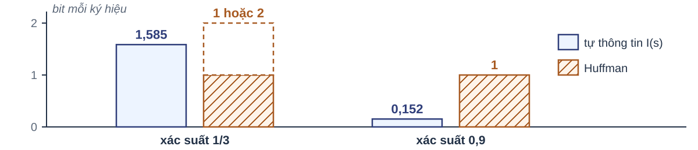
Ảnh fax hai màu: mọi mã ký hiệu dùng đúng 1 bit mỗi điểm. $1\,000$ ký hiệu xác suất $0{,}999$: $1{,}44$ so với $1\,000$ bit.
Nhu cầu: mã cả thông điệp thành một số trong $[0;1)$ thay vì nối từ mã.
Tình huống 10.2. Hai cặp số đầu theo NG, tr.96: với xác suất $0{,}9$, mã Huffman dài gấp khoảng $6{,}6$ lần tự thông tin, NG làm tròn thành sáu lần. Ảnh hai màu của máy fax có bảng chữ cái hai ký hiệu, nên mọi mã ký hiệu dùng đúng 1 bit mỗi điểm ảnh và không nén được gì (NG, tr.96). Cặp số $1{,}44$ và $1\,000$ bit theo CMU, trang chiếu 37: $1\,000\cdot(-\log_20{,}999)\approx1{,}44$; cặp này không vẽ trên cùng thang vì tỷ lệ gần 700 lần. Giới hạn chung: theo hệ quả cận entropy của Huffman, phần thừa dưới 1 bit mỗi ký hiệu, nhưng khi $H(P)$ gần 0 thì phần thừa đó lớn hơn chính $H(P)$. Mã số học bỏ ràng buộc mỗi ký hiệu một từ mã.
Ví dụ: thu hẹp khoảng theo B, I, L Mô hình chín ký hiệu: L xác suất 0,2, tám ký hiệu còn lại 0,1, thứ tự như trên hình.
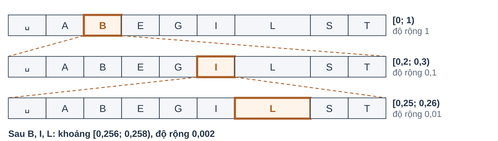
B chọn $[0{,}2;\,0{,}3)$; I chọn đoạn 50%–60% của nó, $[0{,}25;\,0{,}26)$; L chọn 60%–80%, $[0{,}256;\,0{,}258)$.
Trực quan. Mỗi ký hiệu chọn phần của khoảng hiện thời tỷ lệ với xác suất của nó.
Bảng mô hình của NG, tr.97, cho thông điệp BILL GATES, mười ký hiệu kể cả khoảng trắng: khoảng trắng $[0;\,0{,}1)$, A $[0{,}1;\,0{,}2)$, B $[0{,}2;\,0{,}3)$, E $[0{,}3;\,0{,}4)$, G $[0{,}4;\,0{,}5)$, I $[0{,}5;\,0{,}6)$, L $[0{,}6;\,0{,}8)$, S $[0{,}8;\,0{,}9)$, T $[0{,}9;\,1)$. Trên hình, mỗi thanh dưới là bản phóng to của ô được tô ở thanh trên, nên cùng một phép chia lặp lại ở mọi bước; kiểu hình theo EE398A-3, trang chiếu 3–4. Sau ba ký hiệu, độ rộng $0{,}002=0{,}1\cdot0{,}1\cdot0{,}2$ đúng bằng tích xác suất của B, I, L. Định nghĩa kế tiếp viết phép thu hẹp thành công thức với cận dưới và độ rộng.
Khoảng ký hiệu và khoảng chuỗi Định nghĩa. Với mô hình tĩnh $P$, mọi $p_s>0$, thứ tự cố định trên $\Sigma$:
xác suất tích lũy (cumulative probability) $F(s)=\sum_{s'<s}p_{s'}$; khoảng ký hiệu (symbol interval) $[F(s);\,F(s)+p_s)$.
Khoảng chuỗi (sequence interval) của $x_1\cdots x_t$ là $[a_t;\,a_t+w_t)$, với $a_0=0$, $w_0=1$ và
$$a_t=a_{t-1}+w_{t-1}F(x_t),\qquad w_t=w_{t-1}\,p_{x_t}.$$
Lưu ý: $F(s)$ không gồm chính $s$; khoảng nửa mở nên $0{,}2$ thuộc B, không thuộc A.
Định nghĩa 10.30. Cận dưới dời lên một phần $F(x_t)$ của độ rộng cũ, độ rộng mới bằng phần $p_{x_t}$ của độ rộng cũ. Theo NG (tr.97), mỗi ký hiệu sở hữu mọi số từ cận dưới tới cận trên nhưng không gồm cận trên. $F(s)$ giống totals[s] của NG và $f(\cdot)$ của CMU; dùng hàm phân phối tích lũy $\sum_{s'\le s}p_{s'}$ sẽ lệch một ký hiệu. Thứ tự trên $\Sigma$ là tùy ý nhưng là một phần của giao thức. Ký hiệu khác nguồn: cận dưới $l_i$ và độ rộng $s_i$ của CMU viết là $a_t$ và $w_t$. Các mệnh đề về mã số học đều phát biểu qua $a_n$ và $w_n$.
Ví dụ: mã hóa BILL GATES Tính $a_t$, $w_t$ cho BILL GATES, mười ký hiệu kể cả khoảng trắng.
$t$ $x_t$ $a_t$ $a_t+w_t$ $w_t$ 1 B $0{,}2$ $0{,}3$ $10^{-1}$ 2 I $0{,}25$ $0{,}26$ $10^{-2}$ 3 L $0{,}256$ $0{,}258$ $2\cdot10^{-3}$ 4 L $0{,}2572$ $0{,}2576$ $4\cdot10^{-4}$ 5–9 khoảng trắng, G, A, T, E lược lược $4\cdot10^{-5}$ … $4\cdot10^{-9}$ 10 S $0{,}2572167752$ $0{,}2572167756$ $4\cdot10^{-10}$
$w_{10}=0{,}1^8\cdot0{,}2^2=4\cdot10^{-10}$; $I(x)=-\log_2w_{10}\approx31{,}22$ bit.
Ví dụ 10.17, NG, tr.98. Các hàng lược: $t=5$, khoảng trắng: $a_5=0{,}2572$, cận trên $0{,}25724$; $t=6$, G: $0{,}257216$ và $0{,}25722$; $t=7$, A: $0{,}2572164$ và $0{,}2572168$; $t=8$, T: $0{,}25721676$ và $0{,}2572168$; $t=9$, E: $0{,}257216772$ và $0{,}257216776$. Mỗi hàng áp dụng hai công thức thu hẹp: ví dụ hàng 4, $a_4=0{,}256+0{,}002\cdot0{,}6=0{,}2572$ và $w_4=0{,}002\cdot0{,}2=0{,}0004$. Khoảng cuối đã cần mười chữ số thập phân sau dấu phẩy, và số chữ số tăng theo $n$, nên cài đặt thật cần thanh ghi hữu hạn. Mọi số trong khoảng cuối đều giải đúng thông điệp.
Khoảng chuỗi lồng nhau, độ rộng bằng xác suất Mệnh đề. Với mô hình tĩnh, mọi $p_s>0$, số học chính xác:
(a) $[a_t;\,a_t+w_t)\subseteq[a_{t-1};\,a_{t-1}+w_{t-1})$;
(b) $w_n=\prod_tp_{x_t}$, nên $-\log_2w_n=I(x)$;
(c) khoảng chuỗi của $k^n$ thông điệp độ dài $n$ đôi một rời nhau, hợp bằng $[0;1)$.
Ý nghĩa: (b) nối độ rộng với số bit; (c) cho phép giải mã.
Chứng minh. (a) vì $0\le F(x_t)$, $F(x_t)+p_{x_t}\le1$; (b), (c) quy nạp.
Mệnh đề 10.31. Phần (a): $a_t=a_{t-1}+w_{t-1}F(x_t)\ge a_{t-1}$ và $a_t+w_t=a_{t-1}+w_{t-1}(F(x_t)+p_{x_t})\le a_{t-1}+w_{t-1}$. Phần (b) quy nạp từ $w_t=w_{t-1}p_{x_t}$, $w_0=1$. Phần (c): với chuỗi $y$ độ dài $n-1$ có khoảng $[a;\,a+w)$, các khoảng của $y\varsigma_1,\ldots,y\varsigma_k$ là $[a+wF(\varsigma_i);\,a+wF(\varsigma_{i+1}))$, nằm liền nhau từ $a$ tới $a+w$; lấy hợp theo mọi $y$ và dùng giả thiết quy nạp. Ở BILL GATES, $w_{10}=4\cdot10^{-10}$ ứng với $31{,}22$ bit. Bỏ "khoảng nửa mở" thì (c) sai: với khoảng đóng, $0{,}2$ thuộc cả khoảng của A lẫn của B. Với mô hình thích nghi, $p_{x_t}$ được thay bằng xác suất ở bước $t$ và chứng minh không đổi.
Thuật toán: mã số học với số thực Đầu vào: mô hình tĩnh $P$, mọi $p_s>0$; bộ mã nhận $x_1\cdots x_n$, bộ giải mã nhận $z$ và $n$.
Đầu ra: số $z\in[a_n;\,a_n+w_n)$; thông điệp $x_1\cdots x_n$.
MÃ(x₁ … xₙ): a ← 0; w ← 1
for t ← 1 to n: a ← a + w·F(xₜ); w ← w·p(xₜ)
phát một số z ∈ [a; a + w)
GIẢI-MÃ(z, n): ζ ← z
for t ← 1 to n:
tìm s có F(s) ≤ ζ < F(s) + p(s); phát s
ζ ← (ζ − F(s)) / p(s)
Giả thiết: số học chính xác; hai phía cùng $P$ và cùng thứ tự ký hiệu.
Theo (a), (c), $z$ thuộc khoảng của đúng $x_1$; phép biến đổi đưa về khoảng của $x_2\cdots x_n$.
Thuật toán 10.32 và đoạn tính đúng sau nó. Chi tiết của tính đúng: nếu $z$ thuộc khoảng chuỗi của $x$ thì theo (a) $z$ thuộc khoảng của $x_1$, và theo (c) với $n=1$ nó không thuộc khoảng ký hiệu nào khác; phép biến đổi $\zeta\mapsto(\zeta-F(x_1))/p_{x_1}$ đưa khoảng của $x_1$ về $[0;1)$ và đưa khoảng chuỗi của $x$ về khoảng chuỗi của $x_2\cdots x_n$; quy nạp theo $n$. Biến chạy của bộ giải mã viết là $\zeta$, vì $x$ là thông điệp. Dừng: sau $n$ ký hiệu, hoặc khi giải ra EOS. Trường hợp biên: $\zeta$ trùng cận dưới của một khoảng ký hiệu thì thuộc khoảng đó. Chi phí: $O(1)$ phép số học mỗi ký hiệu ở bộ mã, cộng một lần tìm khoảng $O(k)$ ở bộ giải mã; với số thực chính xác, số chữ số của $a$, $w$ tăng theo $n$, nên chi phí thực của mỗi phép tính tăng theo độ dài thông điệp. Số bit của $z$ được chọn ở định lý cận độ dài.
Ví dụ: giải mã BILL GATES $z=0{,}2572167752$, $n=10$: tìm khoảng chứa $\zeta$, rồi $\zeta\gets(\zeta-F(s))/p_s$.
$\zeta$ ký hiệu khoảng $\zeta$ mới $0{,}2572167752$ B $[0{,}2;\,0{,}3)$ $0{,}572167752$ $0{,}572167752$ I $[0{,}5;\,0{,}6)$ $0{,}72167752$ $0{,}72167752$ L $[0{,}6;\,0{,}8)$ $0{,}6083876$ lược L, khoảng trắng, G, A, T lược lược $0{,}38$ E $[0{,}3;\,0{,}4)$ $0{,}8$ $0{,}8$ S $[0{,}8;\,0{,}9)$ $0$
Dừng nhờ $n=10$; không biết $n$ thì $\zeta=0$ vẫn giải thành khoảng trắng.
Ví dụ 10.18, NG, tr.99. Các hàng lược: $0{,}6083876$ cho L, $\zeta$ mới $0{,}041938$; $0{,}041938$ cho khoảng trắng, $0{,}41938$; $0{,}41938$ cho G, $0{,}1938$; $0{,}1938$ cho A, khoảng $[0{,}1;\,0{,}2)$, $0{,}938$; $0{,}938$ cho T, $0{,}38$. NG (tr.99) in khoảng của A là $0{,}2$–$0{,}3$; khoảng đúng là $[0{,}1;\,0{,}2)$, như phép tính $(0{,}1938-0{,}1)/0{,}1=0{,}938$ của chính dòng đó. Dòng cuối là vấn đề dừng: số 0 thuộc khoảng của khoảng trắng, nên bộ giải mã không có cách tự biết thông điệp đã hết. Bộ giải mã cần một cách dừng: truyền kèm $n$, hoặc thêm vào mô hình ký hiệu kết thúc dòng EOS chỉ xuất hiện ở cuối (NG, tr.99; chương trình của sách dùng cách thứ hai).
Ví dụ: bảy chữ A, ký hiệu kết thúc và chuỗi bit Mô hình A 0,9, ký hiệu kết thúc END 0,1; thông điệp bảy chữ A rồi END.
$a_8=0{,}9^8=0{,}43046721$, $w_8=0{,}9^7\cdot0{,}1=0{,}04782969$; $I(x)=-\log_2w_8\approx4{,}386$ bit.
Nhu cầu: chuỗi bit ngắn nhất xác định được khoảng cuối.
Chuỗi 0111 biểu diễn $0{,}4375$, nhưng khoảng mã $[0{,}4375;\,0{,}5)$ vượt cận trên $0{,}4782969$.
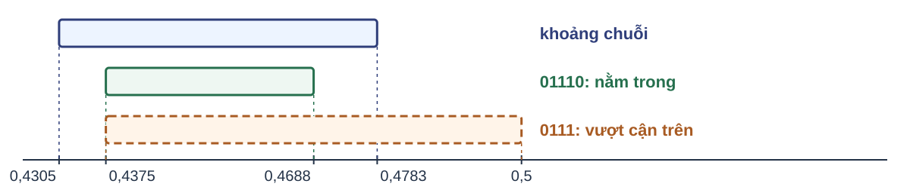
Chuỗi 01110 có khoảng mã nằm trong khoảng cuối: 5 bit, so với 8 bit của Huffman.
Ví dụ 10.19 (NG, tr.104); END đóng vai ký hiệu kết thúc dòng. Sau bảy chữ A, $a_7=0$ và $w_7=0{,}9^7=0{,}4782969$; END cho $a_8=0{,}9^7\cdot0{,}9$ và $w_8=0{,}9^7\cdot0{,}1$, đúng là xác suất của thông điệp, nên $I(x)\approx4{,}386$ bit là mức đích. NG chọn số thập phân $0{,}45$, hai chữ số, tương đương $\log_2100\approx6{,}64$ bit. Khoảng mã $[0{,}4375;\,0{,}46875)$ của 01110 thỏa $0{,}43046721\le0{,}4375$ và $0{,}46875\le0{,}4782969$. Khoảng mã là khái niệm của mạch mã tiền tố: $J(u)$ gồm các số có khai triển nhị phân bắt đầu bằng $u$. Không chuỗi 4 bit nào khác có khoảng mã nằm trong khoảng cuối. Chuỗi 0111 chỉ giải đúng khi bộ giải mã coi các bit sau nó đều là 0, như chương trình của NG làm bằng cách đệm 16 bit 0 ở cuối tệp. Khi khoảng mã nằm trọn trong khoảng chuỗi, dòng bit tự kết thúc và các dòng bit của các thông điệp khác nhau tạo thành mã tiền tố. Bảng chữ cái có hai ký hiệu, nên Huffman dùng 1 bit mỗi ký hiệu, tức 8 bit; NG viết "ít nhất chín bit", số đúng với tám ký hiệu là 8. Một cách trực quan, khoảng mã nằm trong khoảng chuỗi thì mọi phần kéo dài của chuỗi bit chỉ vào khoảng chuỗi.
Khoảng mã trong khoảng chuỗi và cận độ dài Nhắc lại: khoảng mã $J(u)=[z(u);\,z(u)+2^{-\lvert u\rvert})$.
Định lý. Với khoảng chuỗi cuối $[a_n;\,a_n+w_n)$, $w_n>0$, đặt
$$\lambda=\lceil-\log_2w_n\rceil+1,\qquad z=2^{-\lambda}\Bigl\lfloor2^{\lambda}\bigl(a_n+\tfrac{w_n}2\bigr)\Bigr\rfloor=0{,}b_1\cdots b_\lambda.$$
(a) Khoảng mã của $b_1\cdots b_\lambda$ nằm trong khoảng chuỗi.
(b) Khoảng chuỗi đôi một rời nhau, nhờ $n$ hoặc EOS, thì các chuỗi bit tạo mã tiền tố.
(c) $I(x)\le\lambda<I(x)+2$; mọi chuỗi bit có khoảng mã trong khoảng chuỗi dài ít nhất $I(x)$.
Định lý 10.34. Quy tắc lấy trung điểm của khoảng chuỗi rồi cắt khai triển nhị phân còn $\lambda$ bit (CMU, trang chiếu 48). Điều kiện áp dụng: số học chính xác; khoảng chuỗi của các thông điệp cần phân biệt đôi một rời nhau, nhờ độ dài biết trước (phân hoạch (c)) hoặc EOS. Mệnh đề 10.33: nếu $p_{\texttt{EOS}}>0$ và hai thông điệp khác nhau đều có EOS ở vị trí cuối và chỉ ở đó, khoảng chuỗi của chúng rời nhau; chứng minh: không thông điệp nào là tiền tố thực sự của thông điệp kia, nên có vị trí $t$ đầu tiên mà hai ký hiệu khác nhau, và theo phân hoạch (c) rồi tính lồng nhau (a), hai khoảng rời nhau. Phạm vi: quy tắc không luôn cho chuỗi ngắn nhất; kết quả là của mã số học lý tưởng, còn bộ mã thanh ghi hữu hạn của NG kết thúc theo quy tắc khác và có thêm các khoản cố định. Phần thừa so với $I(x)$ của Huffman có thể gần 1 bit mỗi ký hiệu; của mã số học lý tưởng, dưới 2 bit cho cả thông điệp.
Chứng minh: khoảng mã trong khoảng chuỗi và cận độ dài Bước 1: $\lambda\ge-\log_2w_n+1$ cho $2^{-\lambda}\le w_n/2$.
Bước 2: theo $\lfloor\upsilon\rfloor>\upsilon-1$, $z>a_n+\tfrac{w_n}2-2^{-\lambda}\ge a_n$.
Bước 3: theo $\lfloor\upsilon\rfloor\le\upsilon$, $z+2^{-\lambda}\le a_n+\tfrac{w_n}2+2^{-\lambda}\le a_n+w_n$; vậy có (a).
(b): các khoảng mã nằm trong các khoảng chuỗi rời nhau; theo bổ đề khoảng mã, là mã tiền tố.
(c): $\lceil\upsilon\rceil<\upsilon+1$ cho $\lambda<I(x)+2$; khoảng mã dài $\lambda'$ nằm trong khoảng chuỗi thì $2^{-\lambda'}\le w_n$. $\square$
Chứng minh Định lý 10.34: Bước 1–3 cho (a); (b), (c) là hai bước cuối. Ở Bước 3, vì $a_n+w_n\le1$ theo tính lồng nhau (a), $0\le z<1$ và $2^\lambda z$ là số nguyên trong $[0;\,2^\lambda)$, nên chuỗi $b_1\cdots b_\lambda$ tồn tại. Ở (c), $\lambda\ge I(x)+1>I(x)$, và $2^{-\lambda'}\le w_n$ tức $\lambda'\ge-\log_2w_n=I(x)$. Áp dụng trên bảy chữ A: $I(x)\approx4{,}386$ nên $\lambda=\lceil4{,}386\rceil+1=6$; trung điểm $a_8+w_8/2\approx0{,}45438$, nhân $2^6$ được $29{,}08$, nên $z=29/64$ và chuỗi bit 011101, có khoảng mã $[0{,}453125;\,0{,}46875)$. Chuỗi ngắn nhất 01110 có 5 bit, đúng bằng cận dưới $\lceil I(x)\rceil=5$ của (c); quy tắc trung điểm dùng 6 bit.
Độ dài kỳ vọng của mã số học Hệ quả. Giả thiết: $X_1,\ldots,X_n$ độc lập cùng phân phối $P$; mã dùng đúng $P$, biết $n$.
Kết luận: $nH(P)\le\mathbb E[\lambda(X)]<nH(P)+2$.
Chứng minh. $\mathbb E[I(X)]=nH(P)$ theo tuyến tính kỳ vọng; lấy kỳ vọng hai vế của (c).
Lưu ý: Huffman thừa $n(\bar\ell-H)$, tuyến tính theo $n$ trừ khi mọi $p_s$ là lũy thừa của $\tfrac12$.
Mã số học lý tưởng thừa dưới 2 bit cho cả thông điệp.
Hệ quả 10.35. Theo tính chất độ rộng bằng xác suất, $I(X)=\sum_t-\log_2p_{X_t}$, và mỗi $X_t$ có phân phối $P$, nên $\mathbb E[I(X)]=nH(P)$. Phần thừa kỳ vọng của Huffman từng ký hiệu là $n(\bar\ell(c_{\mathrm H})-H(P))$, tuyến tính theo $n$ trừ khi mọi $p_s$ là lũy thừa của $\tfrac12$. Bỏ "mô hình đúng": với bảng mã dựng từ dữ liệu khác, số bit kỳ vọng có thể vượt xa $nH$. Trong thực hành, định lý cận độ dài cần $a_n$ và $w_n$ chính xác; một số thực 80 bit không đủ cho thông điệp dài (NG, tr.100; EE398A-3, trang chiếu 10).
Thanh ghi của bộ mã số học nguyên Nhu cầu: BILL GATES đã cần mười chữ số thập phân; số chữ số tăng tuyến tính theo $n$.
Định nghĩa. Cho $R\ge2$, số đếm $f_s\ge1$, số đếm tích lũy $G(s)=\sum_{s'<s}f_{s'}$, $N=\sum_sf_s$.
Thanh ghi (register) low $\le$ high trong $\{0,\ldots,2^R-1\}$ biểu diễn $\bigl[\texttt{low}/2^R;\,(\texttt{high}+1)/2^R\bigr)$, $\texttt{range}=\texttt{high}-\texttt{low}+1$.
Thu hẹp theo $s$, high tính trước từ low cũ:
$$\texttt{high}\gets\texttt{low}-1+\Bigl\lfloor\frac{\texttt{range}\,(G(s)+f_s)}{N}\Bigr\rfloor,\qquad\texttt{low}\gets\texttt{low}+\Bigl\lfloor\frac{\texttt{range}\,G(s)}{N}\Bigr\rfloor.$$
Định nghĩa 10.36. Chương trình ARITH.C của NG chỉ dùng hai thanh ghi 16 bit, phép nhân trên 32 bit, và số đếm nguyên thay cho xác suất (NG, tr.100, tr.105–108). Cần ba điều: phát dần các chữ số đã chắc chắn, xử lý khoảng co quanh điểm giữa, và điều kiện để phép chia nguyên không làm khoảng của một ký hiệu thành rỗng. Khởi tạo $\texttt{low}=0$, $\texttt{high}=2^R-1$, tức $[0;1)$. high được hiểu là theo sau bởi vô hạn bit 1, nên độ rộng là $\texttt{high}-\texttt{low}+1$ (NG, tr.100). Phép thu hẹp là truy hồi khoảng chuỗi trên số nguyên: $\texttt{range}/2^R$ đóng vai $w_{t-1}$, $G(s)/N$ và $(G(s)+f_s)/N$ đóng vai $F(s)$ và $F(s)+p_s$; phép chia nguyên làm tròn xuống. high tính trước, từ giá trị cũ của low (NG, tr.111). $G(s)$ là totals[s] và $N$ là scale của NG.
Ví dụ: thanh ghi năm chữ số thập phân cho BILL GATES Chữ số đầu của high, low bằng nhau thì phát nó, dịch trái, đưa 9 vào high, 0 vào low.
Ký hiệu high, low sau thu hẹpphát high, low sau dịchB 29999, 20000 2 99999, 00000 I 59999, 50000 5 99999, 00000 L 79999, 60000 L 75999, 72000 7 59999, 20000 khoảng trắng … E lược 2, 1, 6, 7, 7 lược S 55999, 52000 5 59999, 20000
Cuối dòng phát hai chữ số đầu của low, 2 và 0: dòng thập phân $0{,}25721677520$.
Ví dụ 10.20, NG, tr.101–102; khởi tạo $\texttt{high}=99999$, $\texttt{low}=00000$, khoảng ký hiệu bằng phần mười. Các hàng lược: khoảng trắng 23999, 20000, phát 2, sau dịch 39999, 00000; G 19999, 16000, phát 1, 99999, 60000; A 67999, 64000, phát 6, 79999, 40000; T 79999, 76000, phát 7, 99999, 60000; E 75999, 72000, phát 7, 59999, 20000. Kiểm tra: $0{,}2572167752$ là cận dưới của khoảng cuối khi mã hóa bằng số thực. Sau phép dịch đầu, $\texttt{range}=99999-0+1=100\,000$; bảng của NG in $10\,000$. Một cách trực quan, khoảng chỉ co lại, nên khi high và low đã có chung chữ số đầu, chữ số đó thuộc kết quả (NG, tr.101); phát rồi dịch là phóng to khoảng còn lại 10 lần, như bộ giải mã số thực phóng to sau mỗi ký hiệu.
Tràn dưới $\texttt{high}=70000$, $\texttt{low}=69999$: chữ số đầu khác nhau mà khoảng chỉ còn hai giá trị.
Hiện tượng này gọi là tràn dưới (underflow).
Ví dụ. $\texttt{high}=40344$, $\texttt{low}=39810$: rộng 535 nhưng chữ số đầu là 4 và 3.
Xóa chữ số thứ hai, dịch trái: $43449$, $38100$; bộ đếm bằng 1.
Khi chữ số đầu đã định: phát thêm 9 nếu là 3, 0 nếu là 4.
Tràn dưới theo NG, tr.102–103. Ở trạng thái $70000$, $69999$, không ký hiệu nào còn khoảng con, dù chưa chữ số nào được phát. Tràn dưới là hiện tượng khoảng co quanh một điểm ranh giới: khoảng hẹp dần nhưng hai thanh ghi không có chung chữ số đầu, nên quy tắc phát chữ số đầu chung không chạy. Cách của NG là ghi nhớ rằng các chữ số bị xóa đều ở sát ranh giới: nếu chữ số đầu cuối cùng là 3, khoảng nằm dưới 40000 và các chữ số bị xóa là 9; nếu là 4, khoảng nằm trên 40000 và các chữ số bị xóa là 0. Trên hệ nhị phân, bộ đếm này là số bit chờ $m$.
Ba trường hợp chuẩn hóa Chuẩn hóa (renormalization) với $Q=2^{R-2}$, điểm giữa $2Q$; $\eta$ là một điểm của khoảng.
Nửa dưới, $\texttt{high}<2Q$: phát 0 rồi $m$ bit 1; nửa trên, $\texttt{low}\ge2Q$: phát 1 rồi $m$ bit 0.
Khoảng giữa, $Q\le\texttt{low}$, $\texttt{high}<3Q$: tăng số bit chờ (pending bits) $m$.
Ba trường hợp chuẩn hóa của Thuật toán 10.37. Với $[a;\,a+w)$ là khoảng thực của cặp thanh ghi: nửa dưới ứng với $a+w\le\tfrac12$, mọi điểm có bit đầu 0, phóng to theo $\eta\mapsto2\eta$; nửa trên ứng với $a\ge\tfrac12$, bit đầu 1, $\eta\mapsto2\eta-1$; khoảng giữa, khi không thuộc hai trường hợp trên, ứng với $\tfrac14\le a$, $a+w\le\tfrac34$: chưa biết bit đầu, chỉ biết hai bit đầu khác nhau, $\eta\mapsto2\eta-\tfrac12$. NG gọi $m$ là underflow_bits và gộp hai trường hợp đầu thành một nhánh "bit có nghĩa lớn nhất của hai thanh ghi bằng nhau" (tr.111); CMU (trang chiếu 55) dùng cùng ba điều kiện với một bộ đếm $m$. Không dùng cách lan truyền nhớ của EE398A-3, vì ghi chú theo NG và CMU.
Thuật toán: mã hóa một ký hiệu với chuẩn hóa Đầu vào: low, high, $m$; ký hiệu $s$ với $G(s)$, $f_s$; giả thiết $f_s\ge1$, $N\le Q$.
Đầu ra: trạng thái mới và các bit được phát.
ENCODE-SYMBOL(s)
range ← high − low + 1
high ← low + ⌊range·(G[s] + f[s]) / N⌋ − 1
low ← low + ⌊range·G[s] / N⌋
loop:
if high < 2Q: OUTPUT(0); OUTPUT(1 lặp m lần); m ← 0
else if low ≥ 2Q: OUTPUT(1); OUTPUT(0 lặp m lần); m ← 0
low ← low − 2Q; high ← high − 2Q
else if low ≥ Q and high < 3Q: m ← m + 1; low ← low − Q; high ← high − Q
else: break
low ← 2·low; high ← 2·high + 1
Phép quyết định là so hai thanh ghi với $Q$, $2Q$, $3Q$; mỗi lần lặp nhân đôi range.
Thuật toán 10.37. Trước ký hiệu đầu, $\texttt{low}=0$, $\texttt{high}=2^R-1$, $m=0$. Trừ $2Q$ hoặc $Q$ rồi nhân đôi chính là các phép $\eta\mapsto2\eta-1$ và $\eta\mapsto2\eta-\tfrac12$ trên thang thực; NG viết trường hợp giữa bằng phép toán bit low &= 0x3fff; high |= 0x4000 trước khi dịch (tr.111), cho cùng kết quả. Dừng: mỗi lần lặp nhân range lên 2, mà range không vượt $2^R$, nên vòng lặp dừng; khi dừng, $\texttt{low}<2Q\le\texttt{high}$ và $\texttt{low}<Q$ hoặc $\texttt{high}\ge3Q$. Trường hợp biên: $m$ có thể tăng qua nhiều ký hiệu liên tiếp và chỉ về 0 khi một bit được phát. Chi phí mỗi ký hiệu: hai phép nhân, hai phép chia nguyên trên số $2R$ bit, cộng một lần lặp cho mỗi bit được phát hoặc được đưa vào $m$. Còn để ngỏ: bit phát ra có đúng không, và khoảng có thể rỗng không.
Ví dụ: vết 16 bit cho cbb, hai ký hiệu đầu $R=16$, $Q=16\,384$; số đếm a 1, b 2, c 7, $G=(0,1,3)$, $N=10$; thông điệp cbb, $n=3$.
Khoảng thực: c cho $[0{,}3;\,1)$, b cho $[0{,}37;\,0{,}51)$, b cho $[0{,}384;\,0{,}412)$.
Bước lowhighthao tác phát $m$ c: thu hẹp 0100110011001100 ($19\,660$)1111111111111111 ($65\,535$)dừng 0 b: thu hẹp 0101111010110111 ($24\,247$)1000001010001101 ($33\,421$)khoảng giữa 1 sau phóng to 0011110101101110 ($15\,726$)1000010100011011 ($34\,075$)dừng 1
Câu hỏi: ký hiệu b thứ hai đưa khoảng vào trường hợp nào; bit chờ được phát ra sao?
Ví dụ 10.21, dữ kiện và ba hàng đầu; mô hình $p=(0{,}1;\,0{,}2;\,0{,}7)$ của bài CMU-A1, bài 3, với thứ tự a, b, c. Mỗi hàng ghi hai thanh ghi trước thao tác của hàng đó. Hàng c: $\texttt{range}=65\,536$, $\texttt{high}=0-1+\lfloor65\,536\cdot10/10\rfloor=65\,535$, $\texttt{low}=\lfloor65\,536\cdot3/10\rfloor=19\,660$; $\texttt{low}<2Q=32\,768\le\texttt{high}$ và $\texttt{high}\ge3Q$, nên dừng. Hàng b: $\texttt{range}=45\,876$, $\texttt{low}=19\,660+\lfloor45\,876/10\rfloor=24\,247$, $\texttt{high}=19\,660-1+\lfloor45\,876\cdot3/10\rfloor=33\,421$; $Q\le24\,247$ và $33\,421<3Q=49\,152$ nên là khoảng giữa: trừ $Q$, nhân đôi, $m=1$. Hàng thứ ba: $\texttt{low}=15\,726$, $\texttt{high}=34\,075$, không trường hợp nào thỏa. Lời giải: nửa dưới, vì sau thu hẹp $\texttt{high}=21\,230<2Q$; phát 0 rồi bit chờ 1.
Ví dụ: vết 16 bit cho cbb, ký hiệu thứ ba và kết thúc Bước lowhighthao tác phát $m$ b: thu hẹp 0100010010011001 ($17\,561$)0101001011101110 ($21\,230$)nửa dưới 010 1000100100110010 ($35\,122$)1010010111011101 ($42\,461$)nửa trên 10 0001001001100100 ($4\,708$)0100101110111011 ($19\,387$)nửa dưới 00 0010010011001000 ($9\,416$)1001011101110111 ($38\,775$)dừng 0
Kết thúc của ARITH.C: bit thứ hai của low là 0, nên phát 0 rồi $m+1=1$ bit 1, sau đó 16 bit 0.
Dòng 011001 biểu diễn $0{,}390625\in[0{,}384;\,0{,}412)$.
Ví dụ 10.21, bốn hàng cuối và kết quả. Hàng b thứ hai: $\texttt{range}=34\,075-15\,726+1=18\,350$, $\texttt{low}=15\,726+\lfloor18\,350/10\rfloor=17\,561$, $\texttt{high}=15\,726-1+\lfloor18\,350\cdot3/10\rfloor=21\,230$; $\texttt{high}<2Q$ nên nửa dưới: phát 0 rồi bit chờ 1, tức 01. Quy tắc kết thúc (NG, tr.113; mã ở tr.122): sau ký hiệu cuối, phát bit thứ hai của low rồi $m+1$ bit ngược với nó; ở đây low $=$ 0010… có bit thứ hai 0. Dòng bit có 6 bit chưa kể 16 bit 0 đệm. Hai bit kết thúc chọn một điểm trong khoảng hiện thời: bit thứ hai của low là 0 thì $\texttt{low}<Q$ và điểm $\tfrac14$, ứng với 01, nằm trong khoảng vì $\texttt{high}\ge2Q$. Quy tắc này dựa vào 16 bit 0 phía sau, khác định lý cận độ dài, nơi khoảng mã nằm trọn trong khoảng chuỗi.
Tính đúng của bit phát ra và bit chờ Về mặt ý tưởng: khi bit đầu được quyết định, $m$ bit chờ là phần bù của nó.
Bổ đề. Từ lúc $m=0$ (khoảng $\mathcal I_0$), sau $m'$ lần khoảng giữa xen phép thu hẹp,
rồi nửa dưới hoặc nửa trên, với khoảng $\mathcal I_1$ ngay trước đó:
$$\psi(\eta)=2^{m'}\bigl(\eta-\tfrac12\bigr)+\tfrac12,\qquad\psi^{-1}(\mathcal I_1)\subseteq\mathcal I_0.$$
Mọi điểm của $\psi^{-1}(\mathcal I_1)$ bắt đầu bằng $0\,1^{m'}$ (nửa dưới) hoặc $1\,0^{m'}$ (nửa trên).
Bổ đề 10.38. Các bit $0\,1^{m'}$ hoặc $1\,0^{m'}$ đúng là các bit thuật toán phát. Chứng minh: phép thu hẹp cho khoảng con; phép giữa giữ điểm $\tfrac12$ và nhân khoảng cách tới $\tfrac12$ lên 2, nên hợp của $m'$ phép giữa là $\psi$, một ánh xạ tăng. Nếu lần cuối là nửa dưới thì $\mathcal I_1\subseteq[0;\tfrac12)$, nên với $\eta\in\psi^{-1}(\mathcal I_1)$, $\tfrac12-2^{-(m'+1)}\le\eta<\tfrac12$, đúng khoảng mã của $0\,1^{m'}$; nửa trên tương tự. Trên cbb: sau c có $m=0$, $\mathcal I_0\approx[0{,}29999;\,1)$; b thứ nhất cho $m'=1$; trước lần nửa dưới, $\mathcal I_1\approx[0{,}26796;\,0{,}32396)$, kéo về $\psi^{-1}(\mathcal I_1)\approx[0{,}38398;\,0{,}41198)$, nằm trong khoảng mã $[0{,}25;\,0{,}5)$ của 01. Điểm $0{,}9\in\mathcal I_0$ bắt đầu bằng bit 1, nên kết luận chỉ nói về $\psi^{-1}(\mathcal I_1)$, không về cả $\mathcal I_0$.
Khoảng con nguyên không rỗng Bổ đề. Giả thiết: mọi $f_s\ge1$, $N\le Q=2^{R-2}$; trạng thái khởi tạo hoặc lúc vòng chuẩn hóa dừng.
Kết luận: $\texttt{range}\ge Q+2$; mọi ký hiệu nhận khoảng con nguyên khác rỗng, nằm trong khoảng cũ.
Chứng minh. Khi dừng, $\texttt{low}<2Q\le\texttt{high}$ và $\texttt{low}<Q$ hoặc $\texttt{high}\ge3Q$: $\texttt{range}\ge Q+2$.
Với $\alpha=\texttt{range}\,(G(s)+f_s)/N$ và $\beta=\texttt{range}\,G(s)/N$:
$$\lfloor\alpha\rfloor-\lfloor\beta\rfloor\ge\lfloor\alpha-\beta\rfloor\ge\Bigl\lfloor\frac{Q+2}{Q}\Bigr\rfloor\ge1.\ \square$$
Bổ đề 10.39. Bước 1: ở trạng thái khởi tạo $\texttt{range}=4Q$; khi vòng lặp dừng, nếu $\texttt{low}\le Q-1$ thì $\texttt{range}\ge2Q-(Q-1)+1=Q+2$, nếu $\texttt{high}\ge3Q$ thì $\texttt{range}\ge3Q-(2Q-1)+1=Q+2$. Bước 2: phép thu hẹp cho $\texttt{high}-\texttt{low}=\lfloor\alpha\rfloor-\lfloor\beta\rfloor-1\ge0$, vì $\alpha-\beta=\texttt{range}\,f_s/N\ge(Q+2)/Q$ khi $f_s\ge1$, $N\le Q$. Bước 3: $\beta\ge0$ và $\lfloor\alpha\rfloor\le\texttt{range}$ cho khoảng mới nằm trong khoảng cũ. Bỏ $N\le Q$: với $R=16$, trạng thái dừng $\texttt{low}=16\,383$, $\texttt{high}=32\,768$ có $\texttt{range}=16\,386$; nếu $N=20\,000$, $f_s=1$, $G(s)=0$ thì $\lfloor16\,386/20\,000\rfloor=0$ và high mới bằng $\texttt{low}-1$. NG đòi $N<16\,384$ (tr.108), CMU (trang chiếu 53) đặt $2^R>4N$; cả hai kéo theo $N\le Q$. Thủ tục scale_counts của ARITH.C co số đếm để giữ điều kiện này (NG, tr.108–109).
Ví dụ: giải mã hai ký hiệu đầu của cbb Bộ giải mã giữ cùng low, high, thêm thanh ghi code chứa $R$ bit tiếp theo.
$$\texttt{count}=\Bigl\lfloor\frac{(\texttt{code}-\texttt{low}+1)N-1}{\texttt{range}}\Bigr\rfloor,\qquad G(s)\le\texttt{count}<G(s)+f_s.$$
Dòng 011001 đệm bit 0: $\texttt{code}=25\,600$; $\texttt{range}=65\,536$.
Ký hiệu 1: $\lfloor(25\,601\cdot10-1)/65\,536\rfloor=3$ và $3\le3<10$: c.
Thu hẹp: $\texttt{low}=19\,660$, $\texttt{range}=45\,876$; ký hiệu 2: $\lfloor(5\,941\cdot10-1)/45\,876\rfloor=1$: b.
Thuật toán 10.40; công thức count theo NG, tr.113–114. Thanh ghi đầu là 0110010000000000 $=25\,600$. Ký hiệu đầu: $G(\mathrm c)=3\le3<3+7$, nên c. Bộ giải mã thu hẹp như bộ mã, được $\texttt{low}=19\,660$, $\texttt{high}=65\,535$, không cần dịch vì vòng chuẩn hóa dừng ngay. Ký hiệu thứ hai: $\texttt{code}-\texttt{low}+1=25\,600-19\,660+1=5\,941$, và $G(\mathrm b)=1\le1<3$, tức b. Công thức count là phép thu hẹp viết ngược: nó tìm số đếm tích lũy mà điểm code rơi vào trên thang $[0;\,N)$. Hai phía giữ cùng low, high vì bộ giải mã chạy đúng các phép thu hẹp và chuẩn hóa của bộ mã.
Thuật toán: giải mã nguyên và kết thúc dòng Đầu vào: dòng bit của bộ mã kể cả phần kết thúc; cùng $f_s$, $G(s)$, $N$, $R$ như bộ mã.
Đầu ra: thông điệp, dừng khi giải ra EOS.
DECODE()
low ← 0; high ← 2^R − 1; code ← R bit đầu của dòng
loop:
range ← high − low + 1
count ← ⌊((code − low + 1)·N − 1) / range⌋
tìm s có G[s] ≤ count < G[s] + f[s]
if s = EOS: break
phát s; thu hẹp low, high theo s như bộ mã
chuẩn hóa như bộ mã; code chịu cùng phép trừ,
nhân đôi và nhận thêm một bit vào cuối
Cùng $R$, $N$, thứ tự và công thức làm tròn: hai phía có cùng low, high trước mỗi ký hiệu.
Thuật toán 10.40 và Mệnh đề 10.41. Giả thiết như bộ mã: $f_s\ge1$, $N\le Q$; EOS là một ký hiệu của mô hình. Kết thúc ở bộ mã: sau khi mã EOS, phát bit thứ hai của low rồi $m+1$ bit ngược với nó, sau đó 16 bit 0, vì bộ giải mã luôn đọc trước 16 bit (NG, tr.105–106, tr.113). Dòng kết là kết luận của Mệnh đề 10.41: bộ giải mã thực hiện đúng các phép thu hẹp và chuẩn hóa trên cùng số nguyên, nên nếu chọn đúng ký hiệu thì hai phía có cùng thanh ghi ở bước sau; để chọn đúng, cần chứng minh code cùng các bit đọc tiếp biểu diễn một điểm thuộc khoảng con nguyên của ký hiệu, dùng bổ đề bit chờ và tính đơn điệu của phép làm tròn. Chứng minh đầy đủ nằm ngoài phạm vi học phần (Witten, Neal và Cleary, 1987, NG dẫn ở tr.385). Trường hợp biên: 16 bit 0 đệm đủ cho các lần đọc trước, nên bộ giải mã không đọc quá cuối tệp (NG, tr.106).
Chi phí: mã số học nguyên Mô hình: phép trên từ $2R$ bit $O(1)$; xấu nhất; $\lambda$ bit phát ra.
Bước Số lần Chi phí mỗi lần Đóng góp đếm, co số đếm, lập bảng $G$ $n$ và $k$ $O(1)$ $O(n+k)$ thu hẹp khi mã hóa hoặc giải mã $n$ $O(1)$ $O(n)$ lặp chuẩn hóa mỗi bit phát, mỗi bit chờ $O(1)$ $O(\lambda)$ tìm ký hiệu khi giải mã $n$ $O(k)$ $O(nk)$ đầu mục số đếm 1 $k$ số đếm $O(k)$
Bộ nhớ $O(k)$: bảng $G$, ba thanh ghi; đọc dữ liệu hai lượt.
Chi phí của Thuật toán 10.37 và 10.40. Mỗi hàng truy được về một dòng của bộ mã hoặc bộ giải mã: thu hẹp là ba dòng đầu của ENCODE-SYMBOL, lặp chuẩn hóa là thân vòng loop, tìm ký hiệu là dòng tìm $s$ của DECODE, quét bảng totals của NG (tr.114). Bảng có $k+1$ số. So với cận $\lambda<I(x)+2$ của mã lý tưởng, bộ mã của NG có thêm các khoản cố định: EOS với số đếm 1 tốn khoảng $\log_2N$ bit, tới 14 bit; phần kết thúc thêm 2 bit cùng $m$ bit chờ còn lại (tr.113, tr.122); 16 bit 0 đệm làm tệp dài thêm 2 byte (tr.105–106); phép làm tròn làm mỗi khoảng con hẹp đi một chút (EE398A-3, trang chiếu 13–14); và đầu mục số đếm như Huffman tĩnh. Các số trong bảng là phép đếm theo giả mã.
Bài tập: bảng số đếm tích lũy Câu hỏi: số đếm A 5, B 2, C 3, D 3, E 8; $R=16$.
Lập bảng $G(s)$ và $N$; kiểm điều kiện $N\le Q$.
Ở trạng thái khởi tạo, tìm ký hiệu khi $\texttt{code}=24\,576$ và khi $\texttt{code}=40\,960$.
Bài tập 10.7 của ghi chú, số đếm theo NG, tr.107; kiểm số đếm tích lũy, điều kiện của bổ đề khoảng con và công thức count. Gợi ý: $\texttt{range}=65\,536$ ở trạng thái khởi tạo. Lời giải: $G(\mathrm A)=0$, $G(\mathrm B)=5$, $G(\mathrm C)=7$, $G(\mathrm D)=10$, $G(\mathrm E)=13$, $N=21\le Q=16\,384$, như bảng totals của NG. Với $\texttt{code}=24\,576$: $\lfloor(24\,577\cdot21-1)/65\,536\rfloor=\lfloor516\,116/65\,536\rfloor=7$, và $7\le7<10$, nên C. Với $\texttt{code}=40\,960$: $\lfloor860\,180/65\,536\rfloor=13$, nên E. Kiểm tra: $24\,576/65\,536=0{,}375\in[7/21;\,10/21)$ và $40\,960/65\,536=0{,}625\in[13/21;\,1)$. Hướng dẫn chấm: bảng $G$ và $N$ (4 điểm), kiểm $N\le Q$ (1 điểm), hai phép tính count và ký hiệu (5 điểm).
7. Bài tập vận dụngMuốn vận dụng Kraft, hai mã Huffman và mã số học, phải chạy tay và chứng minh trên bài của sách và CMU 15-499.
Đếm lá · Lượt ghép · Nút cuối khối · Giải mã khoảng
Phần tổng kết đã đặt kết quả, giả thiết và chi phí của ba bộ mã cạnh nhau. Bốn bài sách theo thứ tự mạch giảng: chứng minh bất đẳng thức Kraft bằng cách đếm lá (CMU-A1, bài 4A, tr.1); chạy Huffman A–E với quy tắc gán bit khác (NG, Chương 3, tr.32–37); ba lần tăng A trên cây của NG (Chương 4, Hình 4.2–4.4, tr.69–72); giải mã số học bốn chữ (CMU-A1, bài 3, tr.1). Lời giải đầy đủ ở các Bài tập 10.12, 10.11, 10.14 và 10.15 của tệp bài tập.
Bài tập: bất đẳng thức Kraft bằng cách đếm lá Câu hỏi: cho mã tiền tố $c$ với độ dài $\ell_s$ và $\ell_{\max}=\max_s\ell_s$.
Cây nhị phân hoàn hảo (perfect binary tree) độ sâu $\ell_{\max}$:
mọi nút trong có hai con, mọi lá ở độ sâu $\ell_{\max}$.
Chứng minh $\sum_s2^{-\ell_s}\le1$ bằng cách đếm các lá của cây đó.
Nguồn: CMU 15-499, Assignment 1a, bài 4A, tr.1.
Bài tập 10.12 của tệp bài tập, theo CMU-A1, bài 4A, tr.1 (lời giải tr.3). Đề CMU gợi ý "quy nạp"; ghi chú chốt cách đếm lá theo lời giải CMU-A1, nên đề nêu "bằng cách đếm các lá". Bài kiểm chiều (a) của bất đẳng thức Kraft bằng một lối chứng minh khác với lối khoảng mã đã giảng: hai lối cùng đếm phần "chỗ" mà mỗi từ mã chiếm, một lối trên đoạn $[0;1)$, một lối trên tập lá. Gợi ý: đếm số lá ở độ sâu $\ell_{\max}$ nhận một từ mã độ dài $\ell$ làm tổ tiên.
Bài tập: bất đẳng thức Kraft bằng cách đếm lá Lời giải: cây có $2^{\ell_{\max}}$ lá, là mọi chuỗi $\ell_{\max}$ bit.
Bước 1: $c(s)$ là tổ tiên của đúng các lá có tiền tố $c(s)$, gồm $2^{\ell_{\max}-\ell_s}$ lá.
Bước 2: lá có hai tiền tố $c(s)$, $c(s')$, $s\ne s'$, thì một từ mã là tiền tố của từ mã kia.
Bước 3: điều kiện tiền tố cho các tập lá rời nhau, nên
$$\sum_s2^{\ell_{\max}-\ell_s}\le2^{\ell_{\max}}\quad\Rightarrow\quad\sum_s2^{-\ell_s}\le1.\ \square$$
Lời giải theo Bài tập 10.12. Ở Bước 1, $\ell_{\max}-\ell_s$ bit cuối tùy ý, nên có $2^{\ell_{\max}-\ell_s}$ lá. Bước 2 là chỗ duy nhất dùng điều kiện tiền tố. Bước 3 chia hai vế cho $2^{\ell_{\max}}$. Lời giải CMU-A1 (tr.3) in bất đẳng thức của Bước 3 theo chiều ngược lại; chiều đúng là tổng số lá được đếm không vượt $2^{\ell_{\max}}$. Liên hệ: tập lá của $c(s)$ ứng đúng với khoảng mã $J(c(s))$ chia lưới $2^{-\ell_{\max}}$. Lỗi thường gặp: đếm các nút ở mọi độ sâu thay vì chỉ lá ở độ sâu $\ell_{\max}$; quên chứng minh các tập lá rời nhau. Hướng dẫn chấm, 10 điểm: Bước 1 với số lá đúng (3 điểm), Bước 2 dùng đúng điều kiện tiền tố (4 điểm), Bước 3 và chiều bất đẳng thức đúng (3 điểm).
Bài tập: Huffman A–E với quy tắc gán bit khác Câu hỏi: số đếm A 15, B 7, C 6, D 6, E 5.
Chạy Huffman tĩnh; ghi bốn lượt ghép, bảng mã và tổng số bit.
So với mã 87 bit đã giảng, với 89 bit của Shannon–Fano và $85{,}25$ bit tự thông tin.
Quy ước: phá hòa chọn D trước C; trong mỗi lượt, nút lấy ra trước nhận bit 0.
Nguồn: Nelson và Gailly, Chương 3, ví dụ A–E, tr.32–37.
Bài tập 10.11 của tệp bài tập: ví dụ A–E của NG, tr.32–37, chuyển thành bài luyện. Quy tắc phá hòa là của NG; quy tắc gán bit "nút lấy ra trước nhận bit 0" là quy ước của ghi chú, khác cách gán trên hình của NG, nên bài không trùng ví dụ đã giảng. Bài kiểm chạy thuật toán và vai trò của quy tắc gán bit trong giao thức. Gợi ý: lượt 1 lấy E5 rồi D6, nên E nhận bit 0 ở lượt đó.
Bài tập: Huffman A–E với quy tắc gán bit khác Lời giải: bốn lượt, bit ghi sau mỗi nút lấy ra.
Lượt Lấy ra trước (bit 0) Lấy ra sau (bit 1) Nút mới 1 E5 D6 11 2 C6 B7 13 3 11 13 24 4 A15 24 gốc 39
Lời giải theo Bài tập 10.11, phần các lượt. Lượt 1: hai nút nhẹ nhất là E5 và một trong C6, D6; quy tắc phá hòa chọn D. Lượt 2: hàng đợi còn A15, B7, C6, 11; lấy C6 rồi B7. Lượt 3: hàng đợi A15, 11, 13; lấy 11 rồi 13. Lượt 4: A15 rồi 24. Lỗi thường gặp: gán bit 0 cho nút nặng hơn thay vì nút lấy ra trước; ở lượt 4, A15 nhẹ hơn 24 nên được lấy ra trước và nhận bit 0. Hướng dẫn chấm cho cả bài, 10 điểm: bốn lượt đúng (4 điểm), bit đúng trong mỗi lượt (2 điểm), bảng mã (2 điểm), số bit và so sánh (2 điểm).
Bài tập: Huffman A–E với quy tắc gán bit khác Lời giải: đọc bit từ gốc xuống lá.
A = 0, E = 100, D = 101, C = 110, B = 111.
$15\cdot1+(7+6+6+5)\cdot3=87$ bit: cùng hình dạng cây với mã đã giảng, từ mã khác.
$85{,}25\le87<85{,}25+39$, và 87 bit ít hơn 89 bit của Shannon–Fano.
Lời giải theo Bài tập 10.11, phần bảng mã và so sánh. E: gốc bit 1 (nút 24), nút 24 bit 0 (nút 11), nút 11 bit 0, tức 100; D: 101; C: gốc 1, nút 24 bit 1 (nút 13), nút 13 bit 0, tức 110; B: 111. Cây cùng hình dạng với cây của ví dụ đã giảng nên cùng 87 bit, nhưng từ mã khác: quy tắc gán bit thuộc giao thức như quy tắc phá hòa, và hai phía dùng hai quy tắc khác nhau sẽ giải sai dù nhận đúng từng bit. Dòng cuối là hệ quả cận entropy của mã Huffman trên thông điệp này. Kiểm tra: tổng Kraft $\tfrac12+4\cdot\tfrac18=1$.
Bài tập: ba lần tăng A Câu hỏi: cây có danh sách $\#1$–$\#9$: A2, B2, C2, D2, $(\mathrm A,\mathrm B)4$, $(\mathrm C,\mathrm D)4$, $(\#5,\#6)8$, E10, gốc 18.
Chạy UPDATE ba lần với $s=\mathrm A$.
Sau mỗi lần, ghi các phép đổi, danh sách vị trí và độ dài từ mã của năm ký hiệu.
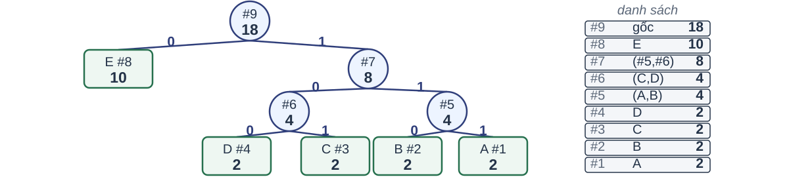
Nguồn: Nelson và Gailly, Chương 4, Hình 4.2–4.4, tr.69–72.
Bài tập 10.14 (a)–(c) của tệp bài tập: các trạng thái của NG, Hình 4.2–4.4, tr.69–72, chuyển thành bài luyện; phần (d) của tệp bài tập không dùng ở đây. Lần 1 trùng lần tăng thứ hai của ví dụ tăng A; lần 3 có nút cuối khối là nút trong. Bài kiểm phép tăng–đổi. Gợi ý: ở mỗi nút trên đường đi, tìm nút cuối của khối cùng trọng số trước khi tăng; sau mỗi phép đổi, đi tiếp từ cha mới của nút vừa tăng. Kiểm tổng sau mỗi lần: trọng số gốc tăng đúng 1, danh sách không giảm, bốn cặp anh em ở $(\#1,\#2)$, …, $(\#7,\#8)$.
Bài tập: ba lần tăng A Lời giải: lần 1 (A 2→3): đổi A với D, nút cuối khối trọng số 2.
Lần $\#1$ $\#2$ $\#3$ $\#4$ $\#5$ $\#6$ $\#7$ $\#8$ $\#9$ 1 D2 B2 C2 A3 (D, B)4 (C, A)5 9 E10 19 2 D2 B2 C2 A4 (D, B)4 (C, A)6 10 E10 20
Lần 2 (A 3→4): A là nút duy nhất trọng số 3, không đổi.
Sau lần 1 và lần 2: A, B, C, D 3 bit, E 1 bit.
Lời giải theo Bài tập 10.14, lần 1 và lần 2. Lần 1 trùng lần tăng thứ hai của ví dụ đã giảng: đổi A với D, tăng A thành 3, cha mới $\#6$ là nút cuối khối 4 nên tăng thành 5, $\#7$ thành 9, gốc 19. Lần 2: A ở $\#4$ là nút duy nhất trọng số 3; tăng A, $\#6$, $\#7$, gốc thành 4, 6, 10, 20; ở $\#6$, khối trọng số 5 chỉ có chính nó, ở $\#7$, khối trọng số 9 cũng chỉ có chính nó. Sau lần 2, $\#4$ và $\#5$ cùng trọng số 4, $\#7$ và $\#8$ cùng trọng số 10: nên lần 3 gặp hai khối có hai nút. Hướng dẫn chấm cho cả bài, 10 điểm: lần 1 (3 điểm), lần 2 (2 điểm), lần 3 với hai phép đổi (4 điểm), độ dài từ mã (1 điểm).
Bài tập: ba lần tăng A Lời giải: lần 3 (A 4→5): đổi A với nút trong $(\mathrm D,\mathrm B)$ ở $\#5$, rồi đổi $\#7$ với E.
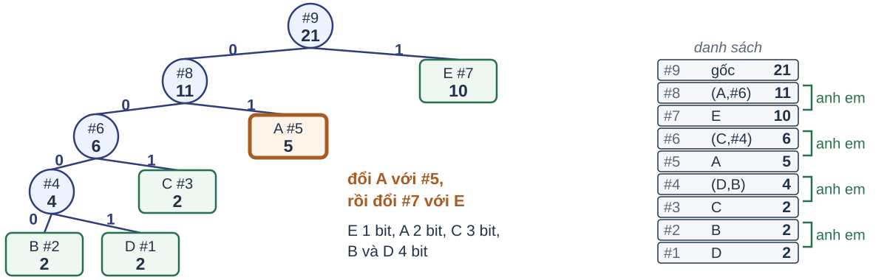
Danh sách D2, B2, C2, $(\mathrm D,\mathrm B)4$, A5, $(\mathrm C,\#4)6$, E10, $(\mathrm A,\#6)11$, 21; E 1, A 2, C 3, B và D 4 bit.
Lời giải theo Bài tập 10.14, lần 3. Khối trọng số 4 gồm A ở $\#4$ và nút trong $(\mathrm D,\mathrm B)$ ở $\#5$; đổi A với $\#5$: A làm con của $\#7$, cây con $(\mathrm D,\mathrm B)$ xuống $\#4$ làm con của $\#6$; tăng A thành 5. Cha mới của A là $\#7$ trọng số 10; khối trọng số 10 gồm $\#7$ và E ở $\#8$, nên đổi $\#7$ với E: hai nút cùng là con của gốc, hình dạng không đổi, chỉ hai vị trí đổi chỗ; tăng nút trong vừa sang $\#8$ thành 11; gốc 21. Nút cuối khối $(\mathrm D,\mathrm B)$ nằm ở nhánh khác với A, đúng bổ đề nút cuối khối: các tổ tiên của A nặng 6, 10, 20. NG vẽ cây này ở Hình 4.4 (tr.72), kể cả phép đổi $\#7$ với E mà lời văn của sách không nhắc; độ dài như NG, tr.71. Kiểm tra: tổng Kraft $\tfrac12+\tfrac14+\tfrac18+2\cdot\tfrac1{16}=1$. Lỗi thường gặp: không đổi ở $\#7$, làm danh sách thành $\ldots$, 11, 10, … và mất tính không giảm.
Bài tập: giải mã số học bốn chữ Câu hỏi: mô hình $p(\mathrm a)=0{,}1$, $p(\mathrm b)=0{,}2$, $p(\mathrm c)=0{,}7$;
xác suất tích lũy $F(\mathrm a)=0$, $F(\mathrm b)=0{,}1$, $F(\mathrm c)=0{,}3$.
Giải mã dòng 01001110110, biết thông điệp có bốn chữ.
Giải thích vì sao dòng này dài hơn mã độ dài cố định 2 bit mỗi chữ.
Entropy của mô hình chỉ hơn 1 bit một chút.
Nguồn: CMU 15-499, Assignment 1a, bài 3, tr.1.
Bài tập 10.15 của tệp bài tập, theo CMU-A1, bài 3, tr.1 (lời giải tr.2). Bài kiểm thuật toán giải mã số thực, khoảng chuỗi và định lý cận độ dài, và phân biệt tự thông tin của một thông điệp với entropy. Cùng mô hình với vết thanh ghi cbb đã giảng. Gợi ý: $0{,}01001110110_2=630/2048$.
Bài tập: giải mã số học bốn chữ Lời giải: $z=630/2048=0{,}3076171875$; đặt $\zeta=z$.
$\zeta$ ký hiệu khoảng $\zeta$ mới $0{,}30762$ c $[0{,}3;\,1)$ $0{,}01088$ $0{,}01088$ a $[0;\,0{,}1)$ $0{,}1088$ $0{,}1088$ b $[0{,}1;\,0{,}3)$ $0{,}0441$ $0{,}0441$ a $[0;\,0{,}1)$
Thông điệp caba; khoảng chuỗi $[0{,}307;\,0{,}3084)$, độ rộng $0{,}0014$.
Lời giải theo Bài tập 10.15, phần giải mã, như lời giải CMU-A1 (tr.2). Phép biến đổi mỗi hàng là $\zeta\gets(\zeta-F(s))/p_s$: $(0{,}30762-0{,}3)/0{,}7\approx0{,}01088$; $0{,}01088/0{,}1=0{,}1088$; $(0{,}1088-0{,}1)/0{,}2=0{,}0441$. Khoảng chuỗi tính xuôi: c cho $[0{,}3;\,1)$; a cho $[0{,}3;\,0{,}37)$; b cho $[0{,}307;\,0{,}321)$; a cho $[0{,}307;\,0{,}3084)$, và $z$ nằm trong khoảng đó. Lỗi thường gặp: dùng $F$ gồm chính ký hiệu, hoặc quên chia cho $p_s$ sau khi trừ $F(s)$.
Bài tập: giải mã số học bốn chữ Lời giải: $I(\mathrm{caba})=-\log_20{,}0014\approx9{,}48$ bit, lớn hơn 8 bit của mã cố định.
caba có hai chữ a và một chữ b, ít xảy ra theo mô hình.
Quy tắc trung điểm: $\lambda=\lceil9{,}48\rceil+1=11$; $0{,}3077\cdot2^{11}\approx630{,}17$, nên chuỗi là 01001110110.
Entropy $H\approx1{,}157$ bit cho kỳ vọng tự thông tin $4H\approx4{,}63$ bit của thông điệp bốn chữ ngẫu nhiên.
Lời giải theo Bài tập 10.15, phần độ dài. Theo tính chất độ rộng bằng xác suất, $w_4=0{,}7\cdot0{,}1\cdot0{,}2\cdot0{,}1=0{,}0014$, nên $I(\mathrm{caba})=-\log_2w_4$. Định lý cận độ dài cho $I(x)\le\lambda<I(x)+2$, và quy tắc trung điểm cho đúng 11 bit của đề: trung điểm $0{,}307+0{,}0007=0{,}3077$. $H=-(0{,}1\log_20{,}1+0{,}2\log_20{,}2+0{,}7\log_20{,}7)\approx1{,}157$ bit; $4H\approx4{,}63$ bit là kỳ vọng của tự thông tin trên thông điệp bốn chữ ngẫu nhiên; caba có $I\approx9{,}48$ bit, lớn hơn kỳ vọng vì ít xảy ra. Hướng dẫn chấm cho cả bài, 10 điểm: $z$ đúng (1 điểm), bốn bước giải mã (4 điểm), $I(\mathrm{caba})$ và lý do dài hơn 8 bit (3 điểm), phân biệt tự thông tin với entropy (2 điểm).
![Ba trục số từ 0 tới 1 đặt cạnh nhau, mỗi trục có vạch ở 1/4, 1/2, 3/4 và một đoạn tô là khoảng hiện thời. Trục 1, nửa dưới: đoạn nằm trong khoảng từ 0 tới 1/2; ghi high nhỏ hơn 2Q, phát 0 rồi m bit 1, η thành 2η. Trục 2, nửa trên: đoạn nằm trong khoảng từ 1/2 tới 1; ghi low ít nhất 2Q, phát 1 rồi m bit 0, η thành 2η − 1. Trục 3, khoảng giữa: đoạn nằm trong khoảng từ 1/4 tới 3/4 và chứa 1/2; ghi low ít nhất Q và high nhỏ hơn 3Q, m tăng 1, η thành 2η − 1/2. Mỗi trường hợp kết thúc bằng phép phóng to gấp đôi](img/lec-10/ba-nhanh-chuan-hoa-trang-chieu.svg)